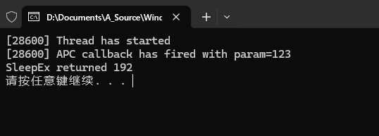
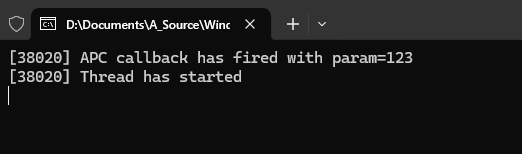
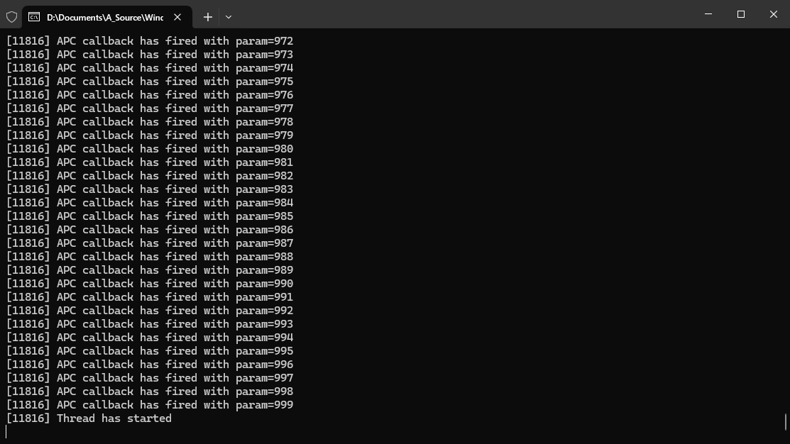
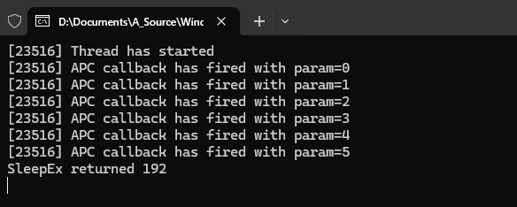
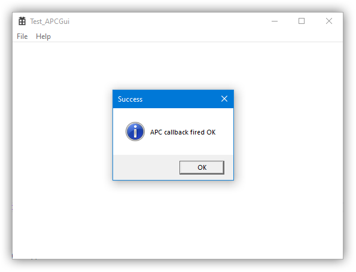
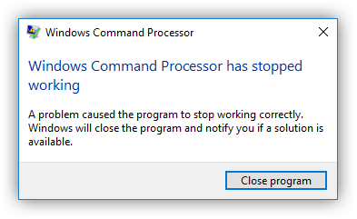
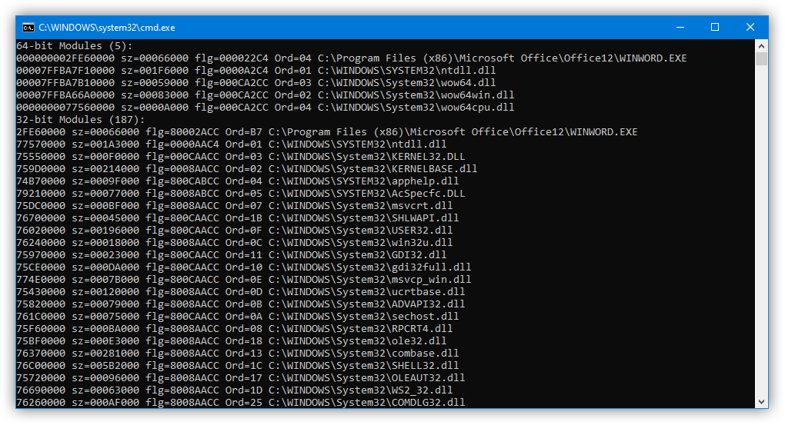

概述：Windows APC 相关内容。 原文链接：Depths of Windows APC - Aspects of internals of the Asynchronous Procedure Calls from the kernel mode. - 阅力值 ⭐⭐⭐⭐⭐ 相关译文：深入 Windows APC - 寂静的羽夏 - 博客园 - 阅力值 ⭐⭐⭐⭐ 相关文章：
由于已经有了译文，我这里仅记录下我自己在学习了解过程中关注的点（内容多为机翻）。
APC 是什么
APC（Asynchronous Procedure Calls），即异步函数调用。简而言之，APC 是 Windows 线程的一个属性，允许指定一个回调例程来异步执行。在大多数情况下，APC 将作为执行一些冗长操作通常是输入/输出（或 I/O），如文件操作、网络事务、定时器等）的异步函数的回调而发挥作用。 Windows 中的 APC 基本上是将回调代码附加到特定线程的方法。
Windows 中的 APC 有两种：内核模式和用户模式。前者主要作为中断执行（我们将在另一篇博文中讨论）。后者在线程需要调用某些 Windows API 以确保调用 APC 回调时有一些复杂之处。本博文将介绍用户模式 APC 的实现。
用原作者的话来说，想要说明这个概念，最好的方式就是用代码演示。
一个简单的 APC 示例
环境说明：使用 Visual Studio 创建控制台程序，不使用C++] 标准库（因为和本文内容无关）
创建一个简单的线程 注意主线程的生命周期要长于子线程！！！
int main()
{
HANDLE hThread = CreateThread(NULL, 0, ThreadProc, 0, 0, NULL);
if (hThread)
{
WaitForSingleObject(hThread, INFINITE);
CloseHandle(hThread);
}
else
wprintf(L"ERROR: (%d) CreateThread\n", GetLastError());
}线程执行体如下所示：
DWORD WINAPI ThreadProc(
_In_ LPVOID lpParameter
)
{
wprintf(L"[%u] Thread has started\n", GetCurrentThreadId());
Sleep(1000 * 1000);
return 0;
}如上所示的程序，主要内容以下两点：
- 打印创建线程所在的 tid
- 保证子线程的在程序运行期间一直存在（1000 * 1000，1000 秒）
接下来要做的就是对 APC 进行排队，原理就是通过 QueueUserAPC 来创建线程回调。这样做的目的就是我们可以在合适的时机去通知线程执行。
int main()
{
HANDLE hThread = CreateThread(NULL, 0, ThreadProc, 0, 0, NULL);
if (hThread)
{
Sleep(1000);
if(!QueueUserAPC(Papcfunc, hThread, 123))
{
wprintf(L"ERROR: (%d) QueueUserAPC\n", GetLastError());
}
WaitForSingleObject(hThread, INFINITE);
CloseHandle(hThread);
}
else
wprintf(L"ERROR: (%d) CreateThread\n", GetLastError());
}如上所示，QueueUserAPC 函数接收三个参数：
-
Papcfunc：函数回调
void Papcfunc( ULONG_PTR Parameter ) { wprintf(L"[%u] APC callback has fired with param=%Id\n", GetCurrentThreadId(), Parameter); } -
hThread：相关的线程句柄
-
123：要传递给回调的值
另外需要注意的是，作者在调用 CreateThread 之后、QueueUserAPC 之前又添加了 1 秒钟的延迟，形式为 Sleep(1000)。我这样做的原因是为了指出测试代码中潜在的竞赛条件。 CreateThread 的工作方式是，它本身是一个异步函数，这意味着它可能会在线程有机会启动之前返回。如果这种情况很快发生，我们对 QueueUserAPC 的调用也可能在线程开始运行之前成功，而不会有任何进一步的延迟。在这种情况下，引用文档中的话：
If an aPPLication queues an APC before the thread begins running, the thread begins by calling the APC function. After the thread calls an APC function, it calls the APC functions for all APCs in its APC queue.
- MSDN
如果在线程开始运行前就将
APC添加到队列中，那么线程一开始就会调用APC函数，并且会调用APC队列中的其它函数。
所以作者为了保证 APC 的回调不被自动执行，添加了 Sleep() 操作。以达到线程开始执行后排队执行 APC 回调。
写到这里，是不是得动手试一下才行呢。
如果你尝试去运行上述代码的话，你会发现
APC回调的函数并没有执行。可以看下微软官方文档对于
QueueUserAPC的补充说明：QueueUserAPC 函数 (processthreadsapi.h) - Win32 apps | Microsoft Learn每个线程都有自己的 APC 队列。 APC 的排队是线程调用 APC 函数的请求。 操作系统发出软件中断，以指示线程调用 APC 函数。
将用户模式 APC 排入队列后，线程不会被引导至调用 APC 函数，除非此函数处于可警告状态。 线程处于可警报状态后，线程处理先入先出 (FIFO) 顺序的所有挂起的 APC，等待操作 将返回 WAIT_IO_COMPLETION。 线程通过使用 SleepEx 函数、 SignalObjectAndWait 函数、 WaitForSingleObjectEx 函数、 WaitForMultipleObjectsEx 函数 或 MsgWaitForMultipleObjectsEx 函数 进入可警报状态。
如果应用程序在线程开始运行之前将 APC 排队，则线程通过调用 APC 函数开始。 线程调用 APC 函数后，会为其 APC 队列中的所有 APC 调用 APC 函数。
可以在 APC 中睡眠或等待对象。 如果在 APC 内执行可警报等待，它将以递归方式调度 APC。 这可能会导致堆栈溢出。
使用 ExitThread 函数 或 TerminateThread 函数 终止线程时，其 APC 队列中的 APC 将丢失。 不调用 APC 函数。
当线程正在终止过程中，调用 QueueUserAPC 以添加到线程的 APC 队列将失败， (31) ERROR_GEN_FAILURE。
请注意， ReadFileEx 函数、 SetWaitableTimer 函数 和 WriteFileEx 函数 是使用 APC 作为完成通知回调机制实现的。
若要编译使用此函数的应用程序， 请将_WIN32_WINNT 定义为 0x0400 或更高版本。 有关详细信息，请参阅 使用 Windows 标头。
随后作者修改了相关代码，使用了
SleepEx函数来进入可警报状态。
DWORD WINAPI ThreadProc(
_In_ LPVOID lpParameter
)
{
wprintf(L"[%u] Thread has started\n", GetCurrentThreadId());
DWORD dwR = SleepEx(INFINITE, TRUE);
wprintf(L"SleepEx returned %d\n", dwR);
Sleep(1000 * 1000);
return 0;
}x64 环境下输出如下所示：

)关于上述代码的执行有以下几点说明：
- APC 回调函数和创建的线程具有相同的线程 ID
SleepEx的返回值是 192（WAIT_IO_COMPLETION），表示在 APC 回调之后返回的函数- 如果注释了
Sleep(1000)，那么 APC 回调会在线程之前执行，输出如下所示：
)
补充说明
当我们在
CreateThread之后调用QueueUserAPC时，APC 回调是在线程本身的初始化过程中执行的。（线程是在调用CreateThread之后异步启动的。）因此在这种情况下，线程就不需要处于警报状态，也就是不需要被SleepEx等接口来调用触发。但是，如果你希望是在线程开始运行后执行 APC 回调，那就可以这么做，即创建线程后，就立马创建 APC 回调。如果需要等待，那就需要创建锁、竞态条件等（或者作者示例的Sleep）来使 APC 回调在线程执行后再执行，来达到先执行线程，再执行 APC 回调的目的。
常规做法
正确的做法就是在创建线程时，通过
CREATE_SUSPENDED指定线程不要启动，创建 APC 回调后，再通过ResumeThread启动线程。添加的 APC 回调并不会启动，只有当ResumeThread启动线程后，对应的 APC 回调会首先执行，然后才会运行到线程入口点ThreadProc。
多 APC 回调
在基本了解之后，开始尝试下为线程创建多个 APC 回调？
修改代码如下所示：
int main()
{
HANDLE hThread = CreateThread(NULL, 0, ThreadProc, 0, 0, NULL);
if (hThread)
{
Sleep(1000);
for (int q = 0; q < 1000; q++)
{
if (!QueueUserAPC(Papcfunc, hThread, q))
{
wprintf(L"ERROR: (%d) QueueUserAPC with value q=%d\n", GetLastError(), q);
break;
}
}
WaitForSingleObject(hThread, INFINITE);
CloseHandle(hThread);
}
else
wprintf(L"ERROR: (%d) CreateThread\n", GetLastError());
}代码逻辑如上所示，创建 1000 个 APC 回调，并传递一个参数 q。运行后输出如下所示：

)显而易见，是可以在一个线程中创建多个 APC 回调的。并且会按照创建的顺序执行。可以插入的 APC 回调函数的数量似乎只受系统中不可分页的内核内存数量的限制。
在上述代码中，引入了一个竞态条件，能看出来是什么吗？
为了查看这个竞态条件是什么，引入了 Sleep(1)，在每次调用 QueueUserAPC 之后都调用一下 Sleep(1)。
int main()
{
HANDLE hThread = CreateThread(NULL, 0, ThreadProc, 0, 0, NULL);
if (hThread)
{
Sleep(1000);
for (int q = 0; q < 1000; q++)
{
if (!QueueUserAPC(Papcfunc, hThread, q))
{
wprintf(L"ERROR: (%d) QueueUserAPC with value q=%d\n", GetLastError(), q);
break;
}
Sleep(1);
}
WaitForSingleObject(hThread, INFINITE);
CloseHandle(hThread);
}
else
wprintf(L"ERROR: (%d) CreateThread\n", GetLastError());
}如果这时候再运行代码，输出会可能如下所示（输出多少取决于创建线程的生命期）：

)为什么 APC 回调就执行了这么几个就结束了？
这就是一个典型的竟态条件。究其原因，是因为我们的
ThreadProc只调用了一次SleepEx。让我们具体看看在循环中有延迟和没有延迟的情况下分别会发生什么。
- 无延迟：在没有延迟的情况下，快速地完成了对
QueueUserAPC的所有调用。在这种情况下，插入的所有 APC 都可以在ThreadProc的SleepEx执行之前运行，并且运行时会按照插入的顺序依次执行，看起来就是我们想要实现的状态。 - 添加延时：在第一个 APC 被创建后，
ThreadProc中的SleepEx函数被调用，该函数处理了我们的单个回调并返回。但在此之后，ThreadProc 就进入了 1000 ms 的延迟，并没有再进入警报状态了。因此我们就只能看到在 Sleep 被调用之前可插入的 APC 回调被执行。
要修复这个错误，只需要在保证在线程中，SleepEx 调用次数和创建的 APC 回调保持一致就行。如下所示：
DWORD WINAPI ThreadProc(
_In_ LPVOID lpParameter
)
{
wprintf(L"[%u] Thread has started\n", GetCurrentThreadId());
for(;;)
{
DWORD dwR = SleepEx(INFINITE, TRUE);
wprintf(L"SleepEx returned %d\n", dwR);
}
//Sleep(1000 * 1000); // becomes redundant
return 0;
}在生产环境中，可以使用类似 WairSingleSingleObjectEx、WaitMultipleObject 这样的函数来触发警报状态，同时还能获取执行状态。
GUI 界面使用 APC
GUI 程序不同于控制台和服务程序，在 GUI 程序中，通常有一个消息循环，它本身并不允许处理 APC 回调。
如果您在 Visual Studio 中为 C++ 创建一个 Windows 桌面应用程序，其 wWinMain 函数中的消息循环可能如下所示：
MSG msg;
while (GetMessage(&msg, nullptr, 0, 0))
{
if (!TranslateAccelerator(msg.hwnd, hAccelTable, &msg))
{
TranslateMessage(&msg);
DispatchMessage(&msg);
}
}
return (int)msg.wParam;WARNING
请注意，微软在上述示例中使用 GetMessage 函数的方法是不正确的，因为它可能返回三个值： 如果收到 WM_QUIT 消息，则返回 0；如果失败，则返回-1；如果收到其他消息，则返回其他值。 换句话说，while 循环应考虑到错误条件，如此处所述。
GetMessage 会无限期的等待，直到在收到消息的时候来存储到 msg 中。
这里作者尝试将 APC 添加到 GUI 程序中，代码如下所示：
void Papcfunc(
ULONG_PTR Parameter
)
{
HWND hWnd = (HWND)Parameter;
MessageBox(hWnd, L"APC callback fired OK", L"Success", MB_ICONINFORMATION);
}
void set_test_APC(HWND hWnd)
{
if (!QueueUserAPC(Papcfunc, GetCurrentThread(), (ULONG_PTR)hWnd))
{
MessageBox(hWnd, L"ERROR: QueueUserAPC failed", L"ERROR", MB_ICONERROR);
}
}这里 QueueUserAPC 所使用的线程为当前运行的线程 GetCurrentThread，而不是通过 CreateThread 创建的线程。另外就是在 APC 回调中调用了 MessageBox 。调用则是通过窗口句柄，在入口函数中调用即可。
如果编译上述代码并运行的话，APC 回调并不会执行。问题原因还是与之前的 Demo 一样，由于没有调用警报函数，导致 APC 回调并没有执行。添加警报函数，修改如下所示：
MSG msg;
int nExitCode = 0;
for (;;)
{
DWORD dwR = MsgWaitForMultipleObjectsEx(0, NULL, INFINITE, QS_ALLINPUT, MWMO_ALERTABLE | MWMO_INPUTAVAILABLE);
if (dwR == WAIT_FAILED)
{
//Error
assert(false);
nExitCode = -1;
break;
}
while (PeekMessage(&msg, NULL, 0, 0, PM_REMOVE))
{
if (msg.message == WM_QUIT)
{
//Normal exit
return (int)msg.wParam;
}
if (!TranslateAccelerator(msg.hwnd, hAccelTable, &msg))
{
TranslateMessage(&msg);
DispatchMessage(&msg);
}
}
}
return nExitCode;这里新增调用了 MsgWaitForMultipleObjectsEx 函数，同时处理主窗口的消息和 APC 回调。另外还指定了 QS_ALLINPUT 参数来请求等待所有消息，然后还通过 MWMO_ALERTABLE 来请求进入可警报状态，并通过使用 MWMO_INPUTAVAILABLE 来请求在消息可用时返回。
在处理消息时，则使用了 PeekMessage ，并传参 PM_REMOVE 来将消息从队列中删除。
最后，还需要处理调用 PostQuitMessage 时的消息，当收到 PostQuitMessage 发送的 WM_QUIT 时，应该退出程序。
最后就是对错误的处理，使用了 assert 进行了处理。
Note that
assertmacros are compiled only in theDebugbuild configuration and are very handy for debugging GUI applications.
assert宏仅在 Debug 模式下编译时生效，对于调试程序非常有效。
运行上述代码，可以看到相关输出如下所示：

)这篇文章的内容相对比较简单，还有在对话框中创建 APC 回调的相关 Demo。这里我就不补充了，感兴趣的点击原文查看。
重点内容在第二篇文章。介绍了 APC 相关的结构体和原理。
从内核模式看 APC 调用过程
在文章的前半部分主要介绍了用户态下如何使用 APC，并使用相关 Demo 用来加深了解。接下来的内容则会深入的了解 APC 调用过程，揭示相关调用细节。
原文参考：
作者是参考了 NT’s Asynchronous Procedure Call 文章的内容，在这篇文章的基础上对 APC 相关内容进行了阐述。
每个等待执行的 APC 都位于特定于线程的内核管理队列中，系统中的每个线程都包含两个 APC 队列，一个用于用户模式 APC，另一个用于内核模式 APC。
NT 通过名为 KAPC 的内核控制对象来表示 APC。 虽然 DDK 没有明确记录 APC，但 KAPC 对象已在 NTDDK.H 中明确声明，如下所示。
typedef struct _KAPC {
CSHORT Type;
CSHORT Size;
ULONG Spare0;
struct _KTHREAD *Thread;
LIST_ENTRY ApcListEntry;
PKKERNEL_ROUTINE KernelRoutine;
PKRUNDOWN_ROUTINE RundownRoutine;
PKNORMAL_ROUTINE NormalRoutine;
PVOID NormalContext;
//
// N.B. The following two members MUST be together.
//
PVOID SystemArgument1;
PVOID SystemArgument2;
CCHAR ApcStateIndex;
KPROCESSOR_MODE ApcMode;
BOOLEAN Inserted;
} KAPC, *PKAPC, *RESTRICTED_POINTER PRKAPC;
// 函数指针对应的声明
void (* KernelRoutine)( _KAPC * , void (* * )( void * , void * , void * ), void * * , void * * , void * * );
void (* RundownRoutine)( _KAPC * );
void (* NormalRoutine)( void * , void * , void * );该结构是 KAPC_STATE 结构体中双链结构体 LIST_ENTRY 的一部分，如下：
typedef struct _KAPC_STATE {
_LIST_ENTRY ApcListHead[0x2];
_KPROCESS * Process;
UCHAR InProgressFlags;
UCHAR KernelApcInProgress : 01; // 0x01;
UCHAR SpecialApcInProgress : 01; // 0x02;
UCHAR KernelApcPending;
UCHAR UserApcPendingAll;
UCHAR SpecialUserApcPending : 01; // 0x01;
UCHAR UserApcPending : 01; // 0x02;
}KAPC_STATE, *PKAPC_STATE;KAPC_STATE 则是线程对象 KTHREAD 的一部分（Line: 142）：
typedef struct _KTHREAD {
_DISPATCHER_HEADER Header;
void * SListFaultAddress;
ULONGLONG QuantumTarget;
void * InitialStack;
void * volatile StackLimit;
void * StackBase;
ULONGLONG ThreadLock;
ULONGLONG volatile CycleTime;
ULONG CurrentRunTime;
ULONG ExpectedRunTime;
void * KernelStack;
_XSAVE_FORMAT * StateSaveArea;
_KSCHEDULING_GROUP * volatile SchedulingGroup;
_KWAIT_STATUS_REGISTER WaitRegister;
UCHAR volatile Running;
UCHAR Alerted[0x2];
ULONG AutoBoostActive : 01; // 0x00000001;
ULONG ReadyTransition : 01; // 0x00000002;
ULONG WaitNext : 01; // 0x00000004;
ULONG SystemAffinityActive : 01; // 0x00000008;
ULONG Alertable : 01; // 0x00000010;
ULONG UserStackWalkActive : 01; // 0x00000020;
ULONG ApcInterruptRequest : 01; // 0x00000040;
ULONG QuantumEndMigrate : 01; // 0x00000080;
ULONG UmsDirectedSwitchEnable : 01; // 0x00000100;
ULONG TimerActive : 01; // 0x00000200;
ULONG SystemThread : 01; // 0x00000400;
ULONG ProcessDetachActive : 01; // 0x00000800;
ULONG CalloutActive : 01; // 0x00001000;
ULONG ScbReadyQueue : 01; // 0x00002000;
ULONG ApcQueueable : 01; // 0x00004000;
ULONG ReservedStackInUse : 01; // 0x00008000;
ULONG UmsPerformingSyscall : 01; // 0x00010000;
ULONG TimerSuspended : 01; // 0x00020000;
ULONG SuspendedWaitMode : 01; // 0x00040000;
ULONG SuspendSchedulerApcWait : 01; // 0x00080000;
ULONG CetUserShadowStack : 01; // 0x00100000;
ULONG BypassProcessFreeze : 01; // 0x00200000;
ULONG Reserved : 10; // 0xffc00000;
LONG MiscFlags;
ULONG BamQosLevel : 02; // 0x00000003;
ULONG AutoAlignment : 01; // 0x00000004;
ULONG DisableBoost : 01; // 0x00000008;
ULONG AlertedByThreadId : 01; // 0x00000010;
ULONG QuantumDonation : 01; // 0x00000020;
ULONG EnableStackSwap : 01; // 0x00000040;
ULONG GuiThread : 01; // 0x00000080;
ULONG DisableQuantum : 01; // 0x00000100;
ULONG ChargeOnlySchedulingGroup : 01; // 0x00000200;
ULONG DeferPreemption : 01; // 0x00000400;
ULONG QueueDeferPreemption : 01; // 0x00000800;
ULONG ForceDeferSchedule : 01; // 0x00001000;
ULONG SharedReadyQueueAffinity : 01; // 0x00002000;
ULONG FreezeCount : 01; // 0x00004000;
ULONG TerminationApcRequest : 01; // 0x00008000;
ULONG AutoBoostEntriesExhausted : 01; // 0x00010000;
ULONG KernelStackResident : 01; // 0x00020000;
ULONG TerminateRequestReason : 02; // 0x000c0000;
ULONG ProcessStackCountDecremented : 01; // 0x00100000;
ULONG RestrictedGuiThread : 01; // 0x00200000;
ULONG VpBackingThread : 01; // 0x00400000;
ULONG ThreadFlagsSpare : 01; // 0x00800000;
ULONG EtwStackTraceApcInserted : 08; // 0xff000000;
LONG volatile ThreadFlags;
UCHAR volatile Tag;
UCHAR SystemHeteroCpuPolicy;
UCHAR UserHeteroCpuPolicy : 07; // 0x7f;
UCHAR ExplicitSystemHeteroCpuPolicy : 01; // 0x80;
UCHAR RunningNonRetpolineCode : 01; // 0x01;
UCHAR SpecCtrlSpare : 07; // 0xfe;
UCHAR SpecCtrl;
ULONG SystemCallNumber;
ULONG ReadyTime;
void * FirstArgument;
_KTRAP_FRAME * TrapFrame;
_KAPC_STATE ApcState;
UCHAR ApcStateFill[0x2b];
CHAR Priority;
ULONG UserIdealProcessor;
LONGLONG volatile WaitStatus;
_KWAIT_BLOCK * WaitBlockList;
_LIST_ENTRY WaitListEntry;
_SINGLE_LIST_ENTRY SwapListEntry;
_DISPATCHER_HEADER * volatile Queue;
void * Teb;
ULONGLONG RelativeTimerBias;
_KTIMER Timer;
_KWAIT_BLOCK WaitBlock[0x4];
UCHAR WaitBlockFill4[0x14];
ULONG ContextSwitches;
UCHAR WaitBlockFill5[0x44];
UCHAR volatile State;
CHAR Spare13;
UCHAR WaitIrql;
CHAR WaitMode;
UCHAR WaitBlockFill6[0x74];
ULONG WaitTime;
UCHAR WaitBlockFill7[0xa4];
SHORT KernelApcDisable;
SHORT SpecialApcDisable;
ULONG CombinedApcDisable;
UCHAR WaitBlockFill8[0x28];
_KTHREAD_COUNTERS * ThreadCounters;
UCHAR WaitBlockFill9[0x58];
_XSTATE_SAVE * XStateSave;
UCHAR WaitBlockFill10[0x88];
void * volatile Win32Thread;
UCHAR WaitBlockFill11[0xb0];
_UMS_CONTROL_BLOCK * Ucb;
_KUMS_CONTEXT_HEADER * volatile Uch;
void * Spare21;
_LIST_ENTRY QueueListEntry;
ULONG volatile NextProcessor;
ULONG NextProcessorNumber : 31; // 0x7fffffff;
ULONG SharedReadyQueue : 01; // 0x80000000;
LONG QueuePriority;
_KPROCESS * Process;
_GROUP_AFFINITY UserAffinity;
UCHAR UserAffinityFill[0xa];
CHAR PreviousMode;
CHAR BasePriority;
CHAR PriorityDecrement;
UCHAR ForegroundBoost : 04; // 0x0f;
UCHAR UnusualBoost : 04; // 0xf0;
UCHAR Preempted;
UCHAR AdjustReason;
CHAR AdjustIncrement;
ULONGLONG AffinityVersion;
_GROUP_AFFINITY Affinity;
UCHAR AffinityFill[0xa];
UCHAR ApcStateIndex;
UCHAR WaitBlockCount;
ULONG IdealProcessor;
ULONGLONG NpxState;
_KAPC_STATE SavedApcState;
UCHAR SavedApcStateFill[0x2b];
UCHAR WaitReason;
CHAR SuspendCount;
CHAR Saturation;
USHORT SListFaultCount;
_KAPC SchedulerApc;
UCHAR SchedulerApcFill0[0x1];
UCHAR ResourceIndex;
UCHAR SchedulerApcFill1[0x3];
UCHAR QuantumReset;
UCHAR SchedulerApcFill2[0x4];
ULONG KernelTime;
UCHAR SchedulerApcFill3[0x40];
_KPRCB * volatile WaitPrcb;
UCHAR SchedulerApcFill4[0x48];
void * LegoData;
UCHAR SchedulerApcFill5[0x53];
UCHAR CallbackNestingLevel;
ULONG UserTime;
_KEVENT SuspendEvent;
_LIST_ENTRY ThreadListEntry;
_LIST_ENTRY MutantListHead;
UCHAR AbEntrySummary;
UCHAR AbWaitEntryCount;
UCHAR AbAllocationRegionCount;
CHAR SystemPriority;
ULONG SecureThreadCookie;
_KLOCK_ENTRY LockEntries[0x6];
_SINGLE_LIST_ENTRY PropagateBoostsEntry;
_SINGLE_LIST_ENTRY IoSelfBoostsEntry;
UCHAR PriorityFloorCounts[0x10];
ULONG PriorityFloorSummary;
LONG volatile AbCompletedIoBoostCount;
LONG volatile AbCompletedIoQoSBoostCount;
SHORT volatile KeReferenceCount;
UCHAR AbOrphanedEntrySummary;
UCHAR AbOwnedEntryCount;
ULONG ForegroundLossTime;
_LIST_ENTRY GlobalForegroundListEntry;
_SINGLE_LIST_ENTRY ForegroundDpcStackListEntry;
ULONGLONG InGlobalForegroundList;
LONGLONG ReadOperationCount;
LONGLONG WriteOperationCount;
LONGLONG OtherOperationCount;
LONGLONG ReadTransferCount;
LONGLONG WriteTransferCount;
LONGLONG OtherTransferCount;
_KSCB * QueuedScb;
ULONG volatile ThreadTimerDelay;
LONG volatile ThreadFlags2;
ULONG PpmPolicy : 02; // 0x00000003;
ULONG ThreadFlags2Reserved : 30; // 0xfffffffc;
ULONGLONG TracingPrivate[0x1];
void * SchedulerAssist;
void * volatile AbWaitObject;
}KTHREAD, *PKTHREAD;将线程附加到另一个进程
任何一个线程都可以通过 KeStackAttachProcess 附加到另一个进程中（该函数接收一个 KAPC_STATE 对象，然后查看 ApcState 参数 ）。或者通过调用 KeUnstackDetachProcess 函数来脱离进程。这么做可能会导致一些问题，内核开发人员需要注意下。
因此，急需一个没有文档化的函数 KeInitializeApc 来初始化 APC 对象：
VOID KeInitializeApc(
IN PRKAPC Apc, //pointer to KAPC
IN PKTHREAD Thread,
IN KAPC_ENVIRONMENT Environment,
IN PKKERNEL_ROUTINE KernelRoutine,
IN PKRUNDOWN_ROUTINE RundownRoutine OPTIONAL,
IN PKNORMAL_ROUTINE NormalRoutine OPTIONAL,
IN KPROCESSOR_MODE ApcMode,
IN PVOID NormalContext
);Environment 的枚举如下所示：
typedef enum _KAPC_ENVIRONMENT {
OriginalApcEnvironment,
AttachedApcEnvironment,
CurrentApcEnvironment
} KAPC_ENVIRONMENT;参数 Environment 指定了 APC 环境。换句话说，当我们插入一个 APC，会告诉系统是应该为当前线程激活它，还是应该在线程挂靠到另一个进程之前为保存的状态（KTHREAD::SavedApcState）激活它。该参数将会在后面保存到 KAPC::ApcStateIndex 成员当中。
为了更好的说明这个概念，让我们回顾如下的 KiInsertQueueApc 代码：
// KiInsertQueueApc() excerpt:
Thread = Apc->Thread;
PKAPC_STATE ApcState;
if (Apc->ApcStateIndex == 0 && Thread->ApcStateIndex != 0)
{
ApcState = &Thread->SavedApcState;
}
else
{
Apc->ApcStateIndex = Thread->ApcStateIndex;
ApcState = &Thread->ApcState;
}如上所示，可以看到 ApcStateIndex 是一个 bool 值：
- ! 0：指示
APC插入到当前线程中，即APC在当前环境、当前线程的上下文环境中； - 0：指示当前
APC应该仅仅在源进程的环境中运行，或者在线程被附加到当前进程前的线程中。
相关的，可以看 KeStackAttachProcess 函数内容如下所示：
// KeStackAttachProcess() excerpt:
if (Thread->ApcStateIndex != 0)
{
KiAttachProcess(Thread, Process, &LockHandle, ApcState);
}
else
{
KiAttachProcess(Thread, Process, &LockHandle, &Thread->SavedApcState);
ApcState->Process = NULL;
}通过代码，可以看到 ApcStateIndex 参数决定了 KiAttachPorcess 的调用方式。
- 如果
KAPC::ApcStateIndex为 0，则当前的KTHREAD::ApcState将保存在KTHREAD::SavedApcState中，而传递的ApcState将不会被使用（除了将其KAPC_STATE::Process设置为 0 以表示该状态在KTHREAD::SavedApcState中被保存）。
但是如果我们递归式挂靠，或当一个线程已经挂靠到另一个进程时我们已经调用了 KeStackAttachProcess，在这种情况下，APC 的状态被保存在 ApcState 对象中，被作为参数传递到函数当中。
至于为什么会有以上逻辑？这种逻辑处理是为了让系统始终可以访问线程的原始 APC 状态，这可以用于将 APC 插入原始线程，或通过调用 KeUnStackDetachProcess 将线程脱离原进程。
APC 的类型
APC 有两个基础类型：内核APC 和 用户APC。内核APC 给予了开发者更多便利来处理和排列 APC 。内核APC 不向用户层提供能够直接访问的权限。
KAPC_STATE::ApcListHead 里面包含了两个链表用来存放 内核APC 和 用户APC。这两个链表分别有 APC 排队等待线程处理：
typedef enum _MODE {
KernelMode = 0x0,
UserMode = 0x1,
MaximumMode = 0x2
}MODE;内核使用这些列表来维护每种类型的 APC 的状态。当 APC 排队或调用 KeInsertQueueApc 处理时，KAPC::ApcMode 用作 KAPC_STATE::ApcListHead 的索引：
NTSTATUS NtQueueApcThread(
IN HANDLE Thread,
IN PKNORMAL_ROUTINE NormalRoutine,
IN PVOID NormalContext,
IN PVOID SystemArgument1,
IN PVOID SystemArgument2
);内核 APC 的内存要求
内核开发新手容易犯的一个错误就是：为内核模式指定了错误的内存类型。认识到这一点很重要，以防止各种以外的蓝屏死机（BSOD）。
这是一定要记住的经验。KAPC 结构体只能使用从非分内存分配]的内存（或者从 NonPagedPool* 类型分配）。即使在 PASSIVE_LEVEL 的 IRQL 初始化并插入 APC，这也是没问题的。
为什么要有这样的内存类型限制呢？
其他一些
APC也可以插入到运行在更高调度级别IRQL的同一线程中。在插入双链APC列表期间，系统将尝试访问列表中已经存在的其他KAPC结构。因此，如果其中任何一个使用的是从分页内存分配的内存，你讲会从DISPATCH_LEVEL间接访问分页内存，这也是一种会导致蓝屏保护的原因。比较棘手的是，如上所述的情况非常少见，在开发和测试阶段基本不会出现，导致在生产代码中很难排查，即在使用过程中可能会发生无法控制的蓝屏。
中断和阻塞内核 APC
关于内核模式的 APC，需要记住的重要一点就是中断可以发生在代码中的任意两个 CPU 指令之间。
内核开发允许我们组织 APC 的执行。只有在代码的某些特殊部分起作用：将 IRQL 提升到 APC_LEVEL 或更高级别或将写的代码放在 KeEnterCritivalRegion 和 KeLeaveCriticalRegion 的调用之间（注意，这些函数并不会阻止所谓的特殊内核 APC 的执行，只有提高 IRQL 级别才能有效阻止 APC 的执行）。
关于作者在上面展示的 IRQL 条件限制，一个非常有趣的事实是：如果 APC 到达关键区域，它不会丢失，稍后将会在一下任一函数中处理：KeLeaveGuardRegion、KeLeaveCriticalRegion、KeLowerIrql 或者在临界区的结尾。
RunDownRoutine 细节
简单点说，任何一种
APC都可以定义一个有效的 RundownRoutine。此例程必须驻留在内核内存中，并且仅在系统需要丢弃 APC 队列的内容是（例如线程退出时）调用。在这种情况下，既不执行KernelRoutine，也不执行NormalRoutine，只执行RundownRoutine。没有此类例程的APC将被释放。
作者基于上文补充了以下几点：
- RundownRoutine 回调仅在线程退出且挂起的 APC 仍在排队时调用（对于用户 APC 这种情况很可能会发生），但它不会以其他方式被调用。
- 如果 RundownRoutine 的值为 NULL，内核只调用
ExFreePool(APC)，这是在上述引用文章的“没有此类例程的APC将被释放”中假设的。当然，如果开发通过调用ExAllocatePool(NonPagePool, sizeof(KAPC))来分配内存，并且之后不涉及额外的分配，那么我们可以依靠系统来为我们释放分配的内存。但是，如果KAPC的分配方式不同，或KAPC的地址与所分配内存的起始地址不匹配，或者由于其他原因，则必须在Rundownroute回调重载中释放所有分配的内存。
APC 和驱动卸载的细微差别
在调用内核 APC 回调例程时有一个微妙时刻，例如，必须始终提供内核例程回调 kernelRoutine 回调，因此在 APC 回调仍在运行时，不能从内存中卸载驱动程序本身，否则肯定会导致 BSOD。
有一种方式可以很容易地复现因正在卸载的驱动程序绑定到挂起的
APC而导致的蓝屏。在某个线程上设置一个断点并且插入一个 APC 到该线程上，强制卸载驱动然后恢复线程并通过NtTestAlert执行 APC，一定会导致蓝屏。
理想情况下，APC 的系统实现应该如下所示：
- 必须在
KAPC中有对DriverObject的引用，在插入APC之前，KeinsertQueueAPC函数应该已经完成了ObfReferenceObject(APC->DriverObject)(此外， 如果keInsertQuqueApc失败，也需要在内部调用ObfDereferenceObject(Apc->DriverObject))。执行上述步骤，当有正在排队的APC时，驱动程序将不会被卸载。 - 然后，在最后调用
KernelRoutine、NormalRoutine或者RundonwnRoutine之前，系统应该已经将DriverObject = APC->DriverObject插入到本地堆栈中，调用适当的APC回调，然后调用ObfDereferenceObject(DriveObject)，因为回调返回后APC本身将变无效。 - 此外，如果
RundownRoutine是无条件调用的，而不是现有的调用方式，也会非常有用。
基于上述几点，内核APC 回调例程的编码将会简单很多，但不幸的是，这些回调的调用可能没有正确编码。
补充
WorkItem对象已经实现了这种功能。可以看下函数IoInitializeWorkItem。我们通过传递一个指向DriveObject或者设备对象的指针，这个指针必须是指向驱动在内存中的地址，只要WorkItem处于活动状态，驱动和设备就不会被卸载。换句话说，当我们添加一个WorkItem对象，系统会为我们调用ObfReferenceObject，然后当调用我们的最终回调时，系统会调用ObfDereferenceObject，这是实现它的正确方法。
那么，正确设置内核 APC 回调的方法是什么呢？
很明显我们可以在初始化过程中从驱动程序本省调用 ObfReferenceObject。但是，在对象的生命周期结束时，我们如何从对象内部调用 ObfDereferenceObject 呢？如果我们这样做，并且执行从 ObfDereferenceObject 函数返回，将会遇到一下情况：我们正在运行的驱动代码已经被卸载，折优惠导致蓝屏。
作者的解决方式是通过使汇编语言]，并使用 JMP 指令调用 ObfDereferenceObject 函数，而不是想大多数编译器那样使用常规的调用指令。通过使用 JMP 指令，我们可以保证执行不会返回到正在卸载的代码。非常不幸，不能使用 c 或 C++ 代码来实现。
为此，作者还补充了相关汇编代码的实现，链接：INJECT/DRV at master · rbmm/INJECT
案例研究-早期注入 Kernel32.dll 的陷阱
这一部分是作者在为一家防病毒公司做自由职业时帮助解决的实际案例
问题描述：
假设一家防病毒公司想要让他们自己的 DLL 注入所有正在运行的进程中。此外，他们很早就想在他们的 DLL 中运行代码，甚至在其他加载的 DLL 有机会收到 DLL_PROCESS_ATTACH 通知之前。
这对公司来说效果很好，除非系统上还安装了一个竞争产品，如果这样的话一切都会崩溃。
他们后来发现另一个反病毒软件在加载 kernel32.dll 时插入了一个 APC，这使得他们注入的 DLL 更早地加载，导致一度无法弄清楚崩溃的原因。
这个难题的答案是得理解早期 DLL 加载过程。当反病毒公司的自定义 DLL 在 Kernel32.dll 之前被注入和加载时，该 DLL 不应该对除本机 ntdll.dll 之外的任何其他 DLL 有任何依赖（直接或间接通过其他模块中的依赖）。情况并非如此，这就导致是导致崩溃的原因。
如果一个驱动程序，就像我展示的那样，调用了一个用户模式的 APC 回调，这反过来又在一些自定义 DLL 上调用了 Loadlibrary，并且如果在 kernel32.dll 有机会加载自身之前调用了这样的回调，那么调用 Loadlibrary 将尝试导入 ntdll.dll，但是此时 kernel32.dll 还没有被加载。因此，从 kernel32.dll 中对 ntdll.dll 中任何函数的第一次导入调用将使进程崩溃。
作为反病毒公司的一种解决办法，他们需要以不同的方式编写注入程序。很显然由于上述的原因，APC 不是最佳解决方案，会导致程序崩溃，并且事实上，防病毒公司的 DLL 需要注入到系统中的每个模块中。
如果我们使用了 APC 回调，我们必须准备好我们的回调，以便于在排队之后随时被调用。但是，如果我们从会调用调用
LoadLibrary(Ex)类型的函数，由于该函数是从Kernel32.dll中导入的，因此又会导致程序崩溃，因为Kernel32.dll此时尚未被加载。
在这种情况下，使用 shellcode 可能是更好地方法，通过 shellcode 调用相关接口来加载 DLL，比如 ntdll!LdrLoadDll:
NTSTATUS LdrLoadDll(
IN PCWSTR SearchPaths,
IN PULONG pFlags,
IN PCUNICODE_STRING DllName,
OUT HMODULE* pDllBase
);此外，此类自定义 DLL 本身必须仅具有来自 ntdll.dll 的静态导入，或者使用来自 kernel32.dll 的延迟加载导入，并且不能使用任何 C 运行时库（CRT） 和许多 C++ 构造器，因为它们内部（即便是静态链接）会给 kernel32.dll 和其他库带来隐式导入。
内核下的用户模式 APC
用户模式 APC 在以下几点下会有不同的情况：
- 不能再任何两条 CPU 指令之间执行，换句话说，不是通过
CPU中断的。 - 必须在 3 环代码或者用户模式上下文中运行。
- 仅在线程处于警报状态时执行特定的可等待
Windows函数后运行。
为了实现这一点，内核和本机子系统的编码方式实在 CPU 离开系统调用时执行用户模式 APC。许多 Windows 函数（或 WINAPI） 需要调用内核，这是通过 sysenter 这个 CPU 指令传递的。在执行时，CPU 首先进入负责路由系统调用的 Windows 内核部分，称为系统服务调用程序。然后根据 EAX 寄存器中提供的系统函数索引处理系统调用本身。在此之后，离开内核空间之前，系统服务调用（System Service Dispatcher）会价差 用户模式APC 的存在，并调整内核堆栈上的 KTRAP_FRAME 来稍后处理用户模式 APC。
用户模式APC 是否存在是在内核函数 nt!KiDeliverApc 函数中完成的。简而言之，处理完 内核APC 之后，就会价差 KTHREAD::PrevioudMode 的值，如果是 UserMode，并且 KTHREAD.SpecialApcDisable 没有被设置，那么就会检查 KTHREAD.ApcState.UserApcPending 是否非零（表示用户模式 用户模式APC 存在）。在此之后，就会调用 nt!KiInitializerUserApc 来修改为 用户模式上下文 从系统调用返回以处理 用户模式APC。
为此，在调整 KTRAP_FRAME 以执行返回到本机子系统中的特殊 ntdll!KiUserApcDispatcher 之前，nt!KiInitializerUserApc 会保存系统调用应该返回的原始 3 环上下文，之后再由 nt!KiInitializerUserApc 返回。
稍后，在执行 sysexit 的 CPU 指令时，由于修改了 KTRAP_FRAME 上下文，CPU 返回到 3 环中的 ntdll!KiUserApcDispathcher 函数。该函数依次处理单个用户模式 APC，然后调用 ntdll!NtContinue(context,TRUE) 将执行返回给内核。上述描述的循环一直持续到线程队列中没有更多的用户模式 APC。
用户模式 APC 的实现
用户模式APC 的一些特殊点：
-
尽管
CPU可以在终端后的任意两条指令之间的任何时刻进入内核模式，但此时并不会调用用户模式APC回调。用户模式 APC 只能在执行特殊的Windows API调用后才能调用 -
假设任何需要
sysenter的Windows API都可用于在返回时处理用户模式APC，前提是某些内核代码为线程设置了KTHREAD.ApcState.UserApcPending，并且用户模式APC在调用之前排队。 -
设置
KTHREAD.ApcState.UserApcPending是MSDN称为线程的警报状态。这是一个有点令人困惑的术语。 -
哪些
API可以设置KTHREAD.ApcState.UserApcPending标志？显然，以下记录的函数可以做到这一点：SleepEx、SignalObjectAndWait、MsgWaitForMultipleObjectsEx、WaitForMultipleObjectsEx或WaitForSingleObjectEx。但也有这些未记录的函数也可以做到这一点：-
ntdll!NtTestAlert：没有输入参数。似乎它的唯一功能是准备所有排队的用户模式APC。它在内部调用nt!KiInitializeUserApc本身NTSTATUS NtTestAlert(); -
ntdll!NtContinue：它将执行返回给内核以继续处理（就像我在此处描述的那样），然后将执行传递给提供的用户模式ThreadContext，同时如果设置了RaiseAlert，则可以选择设置KTHREAD.ApcState.UserApcPending：NTSTATUS NtContinue( IN PCONTEXT ThreadContext, IN BOOLEAN RaiseAlert );
-
特殊的用户 APC
KAPC_STATE 结构中还有一个新成员，称为 SpecialUserApcPending。除了真正的 Windows 内部探索者 中的一些点点滴滴之外，对此知之甚少：
自从 APC 被弄乱以来已经有一段时间了。 RS5 现在添加了“特殊用户 APC”（“KTHREAD-> SpecialUserApcPending
），可以使用NtQueueApcThreadEx作为保留句柄传入 1 来排队。 这些与Mode == KernelMode` 一起用一个强制线程信号进行传递。这是一个巨大的变化。 —— Alex Ionescu
Windows XP 中漏洞百出的用户模式 APC 实现
当前节仅适用于 Windows XP 和更早的系统
如果我们查阅 QueueUSerAPC 函数的文档，你会看到如下的 APC 描述：
如果应用程序在线程开始运行之前对 APC 进行排队，则线程通过调用 APC 函数开始… —— MSDN
在 Windows Vista 之前，当一个线程开始运行时（从内核这发生在调用 KiStartUserThread 和 PspUserThreadStartup 之后），内核会将一个用户模式 APC 排队，并将回调设置为 ntdll!LdrInitializeThunk。但这意味着在用户模式下，线程将从特殊的后 System-Service-Dispatcher 函数 ntdll!KiUserApcDispatcher 开始运行（正如我在此处描述的），而不是从预期的 ntdll!LdrInitializeThunk 开始运行。
在这种情况下的问题是，如果我们自己将 APC 添加到该线程中，它可能在 ntdll!LdrInitializeThunk 之前开始运行，因此我们将收到尚未初始化的线程上下文。这可能会导致一些间歇性崩溃和令人讨厌的计时错误。
当时的解决方案是调用 GetThreadContext 来保证线程上下文在返回之前被初始化。只有在那之后，才可以安全地将 APC 排队：
//WARNING: Deprecated code - do not use!
HANDLE hThread = CreateThread(NULL, 0, ThreadProc, 0, CREATE_SUSPENDED, NULL);
if (hThread)
{
CONTEXT ctx;
GetThreadContext(hThread, &ctx); //XP bug workaround
//Now it's safe to queue APC
QueueUserAPC(Papcfunc, hThread, 0);
//Because thread is originally suspended, this will ensure that our APC callback
//in 'Papcfunc' is executed before 'ThreadProc'
ResumeThread(hThread);
CloseHandle(hThread);
}GetThreadContext 能够解决该计时错误的原因是检索线程上下文的方式。 它是通过将一个特殊的内核模式 APC 排队到目标线程中来完成的，回调函数收集其上下文，然后设置一个由被调用线程等待的事件，称为 GetThreadContext，当内部事件发生时读取上下文时进行设置。
通过用户模式 APC 注入 DLL 的复杂性
有一种技术可以将 DLL 注入到我们自己启动的进程中。大致逻辑如下所示：
- 创建一个最初挂起的进程（带有
CREATE_SUSPENDED标志的[[【winapi】CreateProcess|CreateProcess]]）我们只需要它的初始线程。 - 将
APC添加到该线程（通过QueueUserAPC）中，并将回调设置为LoadLibrary函数，然后调用ResumeThread恢复线程。 APC回调（或对LoadLibrary的调用）保证在目标进程中在其入口点代码之前被调用。
但是我们的
APC回调什么时候会被调用呢？ 从技术上讲，这应该发生在进程中的入口点代码有机会运行之前，在ntdll!LdrInitializeThunk函数调用的出口处（当其中的代码调用NtTestAlert时）。所以我们可以保证APC回调不会比那晚。但是有什么办法可以提前调用吗？ 如果在创建过程中加载到进程中的
DLL有一个调用其DLL_PROCESS_ATTACH处理程序中的一个可警报等待函数（alertable wait functions），那该怎么办呢？这对于Windows系统DLL来说是极不可能的，但对于也加载到进程中的自定义DLL仍然这就是可能的。最起码这种情况会导致我们的APC回调被提前调用。 但实际上，谁在乎我们是否更早地调用LoadLibrary并注入我们的DLL？在大多数情况下，这无关紧要。
PsSetLoadImageNotifyRoutine 陷阱
加载 DLL 时，有一种复杂的情况可能非常关键。比如说，驱动程序可能会使用 PsSetLoadImageNotifyRoutine 函数来拦截某些 DLL 的加载。为此，它会在 DLL 加载过程的早期将自己的 APC 排队。然后，驱动程序通常会通过调用 KeDelayExecutionThread 或使用未文档化的函数 KeTestAlertThread（隐式调用）设置 KAPC_STATE::UserApcPending 标志，从而强制用户模式代码（在 APC 回调中）在正在加载的 DLL 中的代码有机会执行之前运行。
也可以用下面的伪代码来说明：
如下所示为作者的仓库 INJECT/DRV/LoadImage.cpp at master · rbmm/INJECT：
#ifndef _WIN64
#error Showing this for 64-bit builds only!
#endif
LONG gFlags;
PDRIVER_OBJECT g_DriverObject;
enum{
flImageNotifySet,
};
extern "C" NTSTATUS NTAPI DriverEntry(PDRIVER_OBJECT DriverObject, PUNICODE_STRING RegistryPath)
{
g_DriverObject = DriverObject;
DriverObject->DriverUnload = DriverUnload;
NTSTATUS status = PsSetLoadImageNotifyRoutine(OnLoadImage);
if (0 <= status)
{
_bittestandset(&gFlags, flImageNotifySet);
}
return status;
}
void NTAPI DriverUnload(PDRIVER_OBJECT DriverObject)
{
FreeLoadImageData();
}
void FreeLoadImageData()
{
if (_bittestandreset(&gFlags, flImageNotifySet)) PsRemoveLoadImageNotifyRoutine(OnLoadImage);
}
VOID CALLBACK OnLoadImage(
IN PUNICODE_STRING FullImageName,
IN HANDLE ProcessId, // Process where image is mapped
IN PIMAGE_INFO ImageInfo
)
{
STATIC_UNICODE_STRING(kernel32, "\\kernel32.dll");
if (
!ImageInfo->SystemModeImage &&
ProcessId == PsGetCurrentProcessId() && // section can be "remotely" mapped from another process
SuffixUnicodeString(FullImageName, &kernel32) &&
IsByLdrLoadDll(&kernel32)
)
{
BeginInject(&NATIVE_DLL::di);
}
}
VOID CALLBACK RundownRoutine(PKAPC );
VOID CALLBACK KernelRoutine(PKAPC , PKNORMAL_ROUTINE *, PVOID * , PVOID * ,PVOID * );
VOID CALLBACK NormalRoutine(PVOID , PVOID ,PVOID );
void BeginInject(DLL_INFORMATION* pdi)
{
PVOID Section;
if (0 <= pdi->GetSection(&Section))
{
if (PKAPC Apc = ExAllocatePool(NonPagedPool, sizeof(KAPC)))
{
KeInitializeApc(Apc, KeGetCurrentThread(), OriginalApcEnvironment,
KernelRoutine, RundownRoutine, NormalRoutine, KernelMode, Apc);
ObfReferenceObject(g_DriverObject);
ObfReferenceObject(Section);
if (!KeInsertQueueApc(Apc, Section, pdi, IO_NO_INCREMENT))
{
ObfDereferenceObject(Section);
RundownRoutine(Apc);
}
}
}
}
extern "C" NTSYSAPI BOOLEAN NTAPI KeTestAlertThread(IN KPROCESSOR_MODE AlertMode);
VOID CALLBACK _NormalRoutine (
PKAPC Apc,
PVOID Section,
DLL_INFORMATION* pdi
)
{
PVOID BaseAddress;
NTSTATUS status = pdi->MapSection(BaseAddress);
ObfDereferenceObject(Section);
if (0 <= status)
{
union {
PVOID pvNormalRoutine;
PKNORMAL_ROUTINE NormalRoutine;
};
PVOID NormalContext = BaseAddress;
pvNormalRoutine = (PBYTE)BaseAddress + pdi->rva_1;
if (pdi == &WOW_DLL::di) PsWrapApcWow64Thread(&NormalContext, &pvNormalRoutine);
KeInitializeApc(Apc, KeGetCurrentThread(), OriginalApcEnvironment,
KernelRoutine, RundownRoutine, NormalRoutine, UserMode, NormalContext);
ObfReferenceObject(g_DriverObject);
if (KeInsertQueueApc(Apc, NtCurrentProcess(), BaseAddress, IO_NO_INCREMENT))
{
//Force user-mode APC callback
KeTestAlertThread(UserMode);
return;
}
ObfDereferenceObject(g_DriverObject);
MmUnmapViewOfSection(IoGetCurrentProcess(), BaseAddress);
}
_RundownRoutine(Apc);
}
VOID CALLBACK _KernelRoutine(
PKAPC Apc,
PKNORMAL_ROUTINE * /*NormalRoutine*/,
PVOID * /*NormalContext*/,
PVOID * /*SystemArgument1*/,
PVOID * /*SystemArgument2*/
)
{
if (Apc->ApcMode == KernelMode)
{
//Kernel-mode APC
ObfReferenceObject(g_DriverObject); //NormalRoutine will be called
return;
}
//User-mode APC -> free Apc object
_RundownRoutine(Apc);
}
VOID CALLBACK _RundownRoutine(PKAPC Apc)
{
ExFreePool(Apc);
}注意
作者在汇编中编写这些函数是为了能够使用 JMP 指令安全的取消引用 KAPC 对象，详细内容参考 APC 和卸载驱动的差异
extern g_DriverObject:QWORD
extern __imp_ObfDereferenceObject:QWORD
extern ?_RundownRoutine@NT@@YAXPEAU_KAPC@1@@Z : PROC
extern ?_NormalRoutine@NT@@YAXPEAU_KAPC@1@PEAXPEAUDLL_INFORMATION@1@@Z : PROC
extern ?_KernelRoutine@NT@@YAXPEAU_KAPC@1@PEAP6AXPEAX11@ZPEAPEAX33@Z : PROC
_TEXT segment
; VOID CALLBACK RundownRoutine(PKAPC );
?RundownRoutine@NT@@YAXPEAU_KAPC@1@@Z proc
sub rsp,40
; void __cdecl NT::_RundownRoutine(struct NT::_KAPC *)
call ?_RundownRoutine@NT@@YAXPEAU_KAPC@1@@Z
add rsp,40
mov rcx,g_DriverObject
jmp __imp_ObfDereferenceObject
?RundownRoutine@NT@@YAXPEAU_KAPC@1@@Z endp
; VOID CALLBACK KernelRoutine(PKAPC , PKNORMAL_ROUTINE *, PVOID * , PVOID * ,PVOID * );
?KernelRoutine@NT@@YAXPEAU_KAPC@1@PEAP6AXPEAX11@ZPEAPEAX33@Z proc
mov rax,[rsp + 40]
mov [rsp + 24],rax
mov rax,[rsp]
mov [rsp + 32],rax
push rax
; void __cdecl NT::_KernelRoutine(struct NT::_KAPC *,void (__cdecl **)(void *,void *,void *),void **,void **,void **)
call ?_KernelRoutine@NT@@YAXPEAU_KAPC@1@PEAP6AXPEAX11@ZPEAPEAX33@Z
pop rax
mov rax,[rsp + 32]
mov [rsp],rax
mov rcx,g_DriverObject
jmp __imp_ObfDereferenceObject
?KernelRoutine@NT@@YAXPEAU_KAPC@1@PEAP6AXPEAX11@ZPEAPEAX33@Z endp
; VOID CALLBACK NormalRoutine(PVOID , PVOID ,PVOID );
?NormalRoutine@NT@@YAXPEAX00@Z proc
sub rsp,40
; void __cdecl NT::_NormalRoutine(struct NT::_KAPC *,void *,struct NT::DLL_INFORMATION *)
call ?_NormalRoutine@NT@@YAXPEAU_KAPC@1@PEAXPEAUDLL_INFORMATION@1@@Z
add rsp,40
mov rcx,g_DriverObject
jmp __imp_ObfDereferenceObject
?NormalRoutine@NT@@YAXPEAX00@Z endp
_TEXT ends
end如上所示，一些复杂的外部变量是经过编译器处理的
C++函数名称。可以在编译源代码期间使用__FUNCDNAME__预处理器获取他们，用法如下：int SomeFunction(WCHAR* pstr, int value) { __pragma(message("extern " __FUNCDNAME__ " : PROC ; " __FUNCSIG__)) }当编译上述代码时，输出窗口将会输出如下所示内容：
extern ?SomeFunction@@YAHPEA_WH@Z : PROC ; int __cdecl SomeFunction(wchar_t *,int)
了解PsSetLoadImageNotifyRoutine回调是在调用将DLL映射到内存的ZwMapViewOfSection函数中执行的，这是十分重要的。此回调发生在该函数完成设置DLL之前，这意味着DLL已映射但尚未初始化。例如，它的导入函数尚未处理。所以换句话说，那个DLL还不能用！
CAUTION
基于上述内容，如果您决定使用
PsSetLoadImageNotifyRoutine函数将您自己的模块加载到所有其他模块中，则必须遵循一条经验法则：您不能将任何其他 DLL 导入到您的模块中，除了 ntdll.dll。该 DLL 和其他任何 DLL 都保证被映射到任何用户模式进程。
ZwQueueApcThread vs QueueUserAPC
在开始之前，先问一下，你会使用哪个函数？
QueueUserAPC显然已或多或少被文档化了，因此使用起来应该更安全，而ZwQueueApcThread或NtQueueApcThread则没有。
对于用户模式代码，ZwQueueApcThread 和 NtQueueApcThread 函数之间没有区别。这只是你喜欢什么前缀的问题。
在继续之前，让我们检查一下原生 ZwQueueApcThread 函数是如何声明的：
NTSTATUS ZwQueueApcThread(
HANDLE hThread,
PKNORMAL_ROUTINE ApcRoutine,
PVOID ApcContext,
PVOID Argument1,
PVOID Argument2
);如你所见，我们有机会使用本机函数传递3个自定义参数，而不是单个自定义参数或QueueUserAPC中的dwData。确实，对于原生函数来说，这稍微简化了一些事情，但只要我们可以传递一个指针，我们就可以传递任意数量的参数。所以QueueUserAPC没什么大不了的，对吧？
好吧，正如我们将在下面看到的，区别实际上在于QueueUserAPC使用的激活上下文。这不仅仅是差异，而且实际上是一个错误。
激活上下文句柄错误
QueueUserAPC函数的文档中根本没有提到用户模式APC处理激活上下文的方式。相反，这里只是简单地涉及了一下：
异步过程调用、完成端口回调和其他线程上的任何其他回调会自动获取源的激活上下文。 —— MSDN
您可以从QueueUserAPC的实现中了解这意味着什么。在我的Windows 10上大致如此：
typedef struct _ACTIVATION_CONTEXT_BASIC_INFORMATION {
HANDLE hActCtx;
DWORD dwFlags;
} ACTIVATION_CONTEXT_BASIC_INFORMATION, *PACTIVATION_CONTEXT_BASIC_INFORMATION;
DWORD QueueUserAPC(PAPCFUNC pfnAPC, HANDLE hThread, ULONG_PTR dwData)
{
ACTIVATION_CONTEXT_BASIC_INFORMATION ContextInfo = {};
NTSTATUS status = RtlQueryInformationActivationContext(
1, //RTL_QUERY_ACTIVATION_CONTEXT_FLAG_USE_ACTIVE_ACTIVATION_CONTEXT,
NULL,
NULL,
1, //ActivationContextBasicInformation,
&ContextInfo,
sizeof(ContextInfo),
NULL);
if(FAILED(status))
{
BaseSetLastNTError(status);
return FALSE;
}
status = ZwQueueApcThread(hThread, RtlDispatchAPC, pfnAPC, dwData,
!(ContextInfo.dwFlags & 1) ? ContextInfo.hActCtx : INVALID_HANDLE_VALUE);
if(FAILED(status))
{
BaseSetLastNTError(status);
return FALSE;
}
return TRUE;
}
typedef struct _RTL_ACTIVATION_CONTEXT_STACK_FRAME
{
PRTL_ACTIVATION_CONTEXT_STACK_FRAME Previous;
_ACTIVATION_CONTEXT * ActivationContext;
ULONG Flags;
} RTL_ACTIVATION_CONTEXT_STACK_FRAME, *PRTL_ACTIVATION_CONTEXT_STACK_FRAME;
typedef struct _RTL_CALLER_ALLOCATED_ACTIVATION_CONTEXT_STACK_FRAME_EXTENDED
{
SIZE_T Size;
ULONG Format;
RTL_ACTIVATION_CONTEXT_STACK_FRAME Frame;
PVOID Extra1;
PVOID Extra2;
PVOID Extra3;
PVOID Extra4;
} RTL_CALLER_ALLOCATED_ACTIVATION_CONTEXT_STACK_FRAME_EXTENDED,
*PRTL_CALLER_ALLOCATED_ACTIVATION_CONTEXT_STACK_FRAME_EXTENDED;
void RtlDispatchAPC(PAPCFUNC pfnAPC, ULONG_PTR dwData, HANDLE hActCtx)
{
RTL_CALLER_ALLOCATED_ACTIVATION_CONTEXT_STACK_FRAME_EXTENDED ActEx = {};
ActEx.Size = sizeof(ActEx);
ActEx.Format = 1;
if(hActCtx != INVALID_HANDLE_VALUE)
{
RtlActivateActivationContextUnsafeFast(&ActEx, hActCtx);
pfnAPC(dwData);
RtlDeactivateActivationContextUnsafeFast(&ActEx);
RtlReleaseActivationContext(hActCtx);
}
else
pfnAPC(dwData);
}如你所见，它们获取当前激活上下文（添加了对其的引用），然后调用ZwQueueApcThread以使用指向ntdll!RtlDispatchAPC的回调函数对APC进行排队。在其中，它们传递由用户指定的原始回调函数，以及用于调用QueueUserAPC的用户提供的参数，最后是激活上下文的句柄。
顺便说一下，这是 QueueUserAPC 中所有 3 个参数都用完的地方。 所以用户在可用的 3 个参数中只剩下 1 个参数。
在APC回调中，ntdll!RtlDispatchAPC实现激活上下文，使用参数调用用户提供的回调，然后停用并释放它。
需要注意的重要一点以及错误所在的地方是激活上下文“句柄”并不是真正的句柄。它只是指向某些内部数据结构的指针。如果我们对RtlReleaseActivationContext函数中的代码进行逆向工程，就更容易理解了：
; RtlReleaseActivationContext function
; rcx = activation context handle
test rcx, rcx
jnz @@1
retn
@@1:
mov [rsp+0x8], rbx
push rdi
sub rsp, 20h
lea rax, [rcx-1]
mov rbx, rcx
or rax, 7
cmp rax, 0FFFFFFFFFFFFFFFFh
jz @@exit
mov eax, [rcx] ; potential crash
mov ecx, 1
sub eax, ecx
cmp eax, 7FFFFFFDh
ja @@exit
mov eax, [rbx]
lea edi, [rax-1]
lock cmpxchg [rbx], edi ; potential overwrite of memory
; ....如你所见，RtlReleaseActivationContext只需要一个输入参数，即激活上下文句柄，它在rcx寄存器中传递。但是稍后在汇编代码中使用了它。此函数快速检查它是否为0，如果是则退出。然后除了低3位，它对句柄位是否全为1进行再一次基本检查。如果是，它也退出。
但这留下了绝大多数非零激活上下文“句柄”值被允许传递给mov eax, [rcx]指令，该指令仅将其视为内存中的地址。此外，lock cmpxchg [rbx], edi指令可以稍后开始写入该地址。
真正的句柄是对字典的索引或内核内存中句柄表中对象的映射。它不应该仅用作指针，特别是如果这样的句柄可以在进程之间传递！
当在同一进程中使用时，激活上下文“句柄”的这种处理不会造成问题。但是，如果我们使用QueueUserAPC在另一个进程中对APC进行排队呢？那么他们对“句柄”/指针的使用仅意味着：

)但这样的崩溃不会是最糟糕的事情。考虑激活上下文“句柄”是否指向目标进程中的有效内存。那时会发生什么？例如，RtlReleaseActivationContext将覆盖该进程中的一些可写内存，这不仅会导致未定义的行为（UB，undefined behavior），而且之后也很难诊断和调试。
那么为什么这个错误没有引起很多骚动呢？激活上下文毕竟不是一个新概念。
原因是通常不存在进程的激活上下文。因此，使用ActivationContextBasicInformation调用RtlQueryInformationActivationContext或其记录的等效GetCurrentActCtx将返回NULL作为激活上下文“句柄”。Microsoft的回调函数可以优雅地处理NULL。
当模块具有激活上下文时，问题就会发生。例如，在DllMain中，如果模块本身具有带有ISOLATIONAWARE_MANIFEST_RESOURCE_ID标识符的清单。但这非常罕见，因此，我猜，这个问题无人关注。
严谨的APC文档
让我们查看有关我在此处解释的激活上下文“句柄”错误的MSDN文档：
注意：出于多种原因，不建议将 APC 排队到调用者进程之外的线程。 … —— QueueUserAPC 函数
😊真的吗？那是因为你有一个实现错误。那么为什么不直接写，激活上下文“句柄”不能在另一个进程中使用呢？或者更好的是，它可能会导致崩溃、未定义的行为和损坏的内存。
但理想情况下，QueueUserAPC函数应该有一个单独的参数，或者可能是一个新函数QueueUserAPCEx，它应该告诉它是否完全使用激活上下文。而且，他们还应该在技术上修改QueueUserAPC的当前实现，如果hThread输入句柄指向不同进程中的线程，则在内部将激活上下文的NULL传递给APC回调函数。
然后是这个：
…类似地，如果 64 位进程将 APC 排队到 32 位进程，反之亦然，地址将不正确，应用程序将崩溃。 —— QueueUserAPC 函数
同样，他们并没有说出全部真相。
你不能将32位APC回调排队到64位进程中。但是您可以将64位APC回调排队到32位进程中。为此，需要使用另一个鲜为人知且未记录的本机函数RtlQueueApcWow64Thread而不是ZwQueueApcThread，它在32位WOW64进程中将64位APC回调排队：
NTSTATUS RtlQueueApcWow64Thread (
HANDLE hThread,
PKNORMAL_ROUTINE ApcRoutine,
PVOID ApcContext,
PVOID Argument1,
PVOID Argument2
);或者，从内核模式而不是调用需要调用PsWrapApcWow64Thread函数的KeInsertQueueApc：
NTSTATUS PsWrapApcWow64Thread (
_Inout_ PVOID *ApcContext,
_Inout_ PVOID *ApcRoutine
);但是为什么有人需要将64位APC排队到32位进程中呢？我们稍后会回来再研究它。
用户模式APC Demo
为了说明我上面解释的用户模式APC的概念和缺陷，我们编写了一个小示例代码：
int main()
{
//Create activation context
HANDLE hActCtx = INVALID_HANDLE_VALUE;
ACTCTX ActCtx = { sizeof(ActCtx), ACTCTX_FLAG_HMODULE_VALID | ACTCTX_FLAG_RESOURCE_NAME_VALID };
if (ActCtx.hModule = LoadLibraryW(L"IMAGEHLP"))
{
ActCtx.lpResourceName = CREATEPROCESS_MANIFEST_RESOURCE_ID;
hActCtx = CreateActCtxW(&ActCtx);
FreeLibrary(ActCtx.hModule);
}
if (hActCtx != INVALID_HANDLE_VALUE)
{
//Check that we don't have an activation context yet
QueryCtx();
//Set our activation context for this process
ULONG_PTR dwCookie;
if (ActivateActCtx(hActCtx, &dwCookie))
{
//Check that we have an activation context now
QueryCtx();
//Queue APC in this process on this thread
QueueUserAPC(OnApc, GetCurrentThread(), 0);
//Make APC callback execute now
ZwTestAlert(); //same as: SleepEx(0, TRUE);
//Queue APC in a remote process (using native API)
//It will succeed
TestAPC_InRemoteProcess(true);
//Queue APC in a remote process (using Win32 API)
//It will crash the remote process!
TestAPC_InRemoteProcess(false);
DeactivateActCtx(0, dwCookie);
}
ReleaseActCtx(hActCtx);
}
return 0;
}
void TestAPC_InRemoteProcess(bool bUseNativeApi)
{
//Invoke a user-mode APC callback in a remote process
//Get path to cmd.exe
WCHAR appname[MAX_PATH];
if (GetEnvironmentVariableW(L"comspec", appname, _countof(appname)))
{
PROCESS_INFORMATION pi;
STARTUPINFO si = { sizeof(si) };
//Run cmd.exe suspended
if (CreateProcessW(appname, 0, 0, 0, 0, CREATE_SUSPENDED, 0, 0, &si, &pi))
{
//Invoke APC in cmd.exe, using either a native or documented Win32 function
//We don't care about the callback function itself, for as long as it can
//handle our input parameters. Thus I will use LPVOID TlsGetValue(DWORD)
bUseNativeApi
? ZwQueueApcThread(pi.hThread, (PKNORMAL_ROUTINE)TlsGetValue, 0, 0, 0)
: QueueUserAPC((PAPCFUNC)TlsGetValue, pi.hThread, 0);
//Resume thread to let APC execute
ResumeThread(pi.hThread);
CloseHandle(pi.hThread);
CloseHandle(pi.hProcess);
}
}
}
void QueryCtx()
{
//Query activation context in this process and output it into (debugger) console
SIZE_T cb = 0;
ACTIVATION_CONTEXT_RUN_LEVEL_INFORMATION acrli;
union {
PVOID buf;
PACTIVATION_CONTEXT_ASSEMBLY_DETAILED_INFORMATION pacadi;
};
buf = 0;
ACTIVATION_CONTEXT_QUERY_INDEX QueryIndex = { 1, 0 };
__again:
switch (QueryActCtxW(QUERY_ACTCTX_FLAG_USE_ACTIVE_ACTCTX, 0, &QueryIndex,
AssemblyDetailedInformationInActivationContext, buf, cb, &cb) ? NOERROR : GetLastError())
{
case ERROR_INSUFFICIENT_BUFFER:
buf = alloca(cb);
goto __again;
break;
case NOERROR:
if (buf)
{
DbgPrint("==========\nPID=%u: %S\n%S\n",
GetCurrentProcessId(),
pacadi->lpAssemblyManifestPath,
pacadi->lpAssemblyEncodedAssemblyIdentity);
}
break;
}
if (QueryActCtxW(QUERY_ACTCTX_FLAG_USE_ACTIVE_ACTCTX, 0, 0,
RunlevelInformationInActivationContext, &acrli, sizeof(acrli), &cb))
{
DbgPrint("PID=%u: RunLevel = %x\n", GetCurrentProcessId(), acrli.RunLevel);
}
}
VOID NTAPI OnApc(
_In_ ULONG_PTR /*Parameter*/
)
{
//User-mode APC callback
QueryCtx();
}在不使用 WDK 的情况下编译上述代码，添加以下声明：
#pragma comment(lib, "ntdll.lib") //For native function calls
typedef
VOID
KNORMAL_ROUTINE(
__in_opt PVOID NormalContext,
__in_opt PVOID SystemArgument1,
__in_opt PVOID SystemArgument2
);
typedef KNORMAL_ROUTINE* PKNORMAL_ROUTINE;
extern "C" {
__declspec(dllimport) NTSTATUS CALLBACK ZwQueueApcThread(HANDLE hThread,
PKNORMAL_ROUTINE ApcRoutine,
PVOID ApcContext,
PVOID Argument1,
PVOID Argument2);
__declspec(dllimport) NTSTATUS CALLBACK ZwTestAlert();
__declspec(dllimport) ULONG CALLBACK
DbgPrint(
_In_z_ _Printf_format_string_ PCSTR Format,
...
);
}32位进程中的64位用户APC
将64位用户模式APC排队到32位进程中的一个原因是将DLL注入其中。但这不是唯一的用途。
比如说，如果您需要知道加载到进程中的模块列表怎么办？
为您自己的流程执行此操作的一种方法是调用未记录的LdrQueryProcessModuleInformation函数。它将在提供的内存缓冲区中写入完整列表：
NTSTATUS LdrQueryProcessModuleInformation
(
PRTL_PROCESS_MODULES psmi,
ULONG BufferSize,
PULONG RealSize
);但是，对于远程进程中的模块，如何调用它？这也可能具有不同的位数。
作者就这个问题罗列了下相关步骤：
-
我们需要创建一个部分(
NtCreateSection)，我们将使用它来收集和传递有关目标进程中的模块的信息（在Win32用语中，它称为文件映射对象。） -
将该部分映射到目标进程（
ZwMapViewOfSection）中进行写入。 -
在目标进程中创建挂起状态的线程，并将其入口点的地址设置为
RtlExitUserThread。我们并不真正需要线程函数本身，因此我们将分流它以尽快退出。在这种情况下，重要的是使用本机函数 RtlCreateUserThread 来启动线程，而不是文档中的 CreateRemoteThread。这需要确保我们可以控制线程入口点的位数。这是在 CreateRemoteThread 不允许的，因为它使用的实际入口点是 kernel32!BaseThreadInitThunk 而不是我们在其 lpStartAddress 参数中提供给它的函数。
要定义线程将在哪个上下文中启动：
64位或32位，系统将使用线程入口点所在的模块的位数。（或者如果没有模块，就像在纯shellcode中一样，默认情况下线程将接收32位上下文。）请注意，可以在 64 位操作系统中的 32 位（所谓的 WOW64）进程中运行 64 位线程。同时也有一个 64 位版本的 ntdll.dll 模块映射到每个 32 位 WOW64 进程。
-
在我们挂起的线程中插入一个用户模式
APC。回调的位数将取决于目标进程的位数：64位进程：我们只需要ZwQueueApcThread函数就可以对64位APC回调进行原生排队。这里很简单。32位进程：首先使用ZwQueueApcThread对64位回调进行排队，以检索所有映射的64位模块。（正如我上面所说，任何32位WOW64进程都将至少加载一个64位模块。）然后使用RtlQueueApcWow64Thread将32位APC回调排队。 我们将使用LdrQueryProcessModuleInformation函数作为适当位数的APC的回调。对我们来说非常方便，它有3个输入参数，与ZwQueueApcThread和RtlQueueApcWow64Thread函数的自定义参数相匹配。这也是我们选择那些原生函数而不是已经被文档化的QueueUserAPC的另一个原因。 -
恢复线程，它将在目标进程中运行我们排队的
APC。由于我们将其回调设置为LdrQueryProcessModuleInformation，因此该函数将使用有关目标进程中模块的所需信息填充映射部分的内存。 -
线程本身将运行将终止它的
RtlExitUserThread函数。（与Create[Remote]Thread不同，它将在线程返回时将控制权传递给内部包装函数） -
在我们自己的进程中，我们只是等待远程线程完成运行。
-
然后我们可以从目标进程中取消映射该部分，并将其映射到我们自己的进程中并读取我们收集的模块信息。
-
销毁该部分并进行其他清理。 在较旧的（32 位）
Microsoft Word进程上运行上述算法后，我们可以获得其加载模块的列表：

)获取进程模块的代码示例
为了更好地说明此处概述的概念，让我给您以下代码示例，它将检索映射到任意进程的模块：
注意：下面是一个未优化的代码，旨在提高读者的可读性。 我们使用 goto 语句对其进行格式化只是为了防止需要水平滚动。
NTSTATUS ListModulesForProc(DWORD dwPID)
{
//'dwPID' = process ID of the process to retrieve modules for
NTSTATUS status = S_FALSE;
HANDLE hProcess = NULL;
LARGE_INTEGER liSectionSize = {};
SIZE_T ViewSize = 0;
NTDLL_FN_PTRS nfp = {};
ULONG_PTR wow = 0;
#ifndef _WIN64
#error Must be compiled as x64 only!
#endif
hProcess = OpenProcess(PROCESS_VM_OPERATION | PROCESS_CREATE_THREAD | PROCESS_QUERY_INFORMATION, FALSE, dwPID);
if (!hProcess)
{
status = GetLastError();
goto cleanup;
}
//Collect 64-bit modules
nfp.pRtlExitUserThread.pstrName = "RtlExitUserThread";
nfp.pRtlExitUserThread.pfn = (FARPROC)RtlExitUserThread;
nfp.pLdrQueryProcessModuleInformation.pstrName = "LdrQueryProcessModuleInformation";
nfp.pLdrQueryProcessModuleInformation.pfn = (FARPROC)LdrQueryProcessModuleInformation;
status = CollectModules(hProcess, TRUE, &nfp);
if (FAILED(status))
goto cleanup;
//Get process bitness
status = NtQueryInformationProcess(hProcess, ProcessWow64Information, &wow, sizeof(wow), NULL);
if (FAILED(status))
goto cleanup;
if (wow)
{
//Collect 32-bit modules
status = ResolveNtDllFuncs32bit(&nfp);
if (FAILED(status))
goto cleanup;
status = CollectModules(hProcess, FALSE, &nfp);
if (FAILED(status))
goto cleanup;
}
else
status = STATUS_SUCCESS;
cleanup:
//Clean-up process
if(hProcess)
CloseHandle(hProcess);
assert(SUCCEEDED(status));
return status;
}将APC注入目标进程的实际功能在以下函数中实现：
NTSTATUS CollectModules(HANDLE hProcess, BOOL b64bit, NTDLL_FN_PTRS* pfnPtrs)
{
//INFO: It is not the most efficient way of calling this function twice with
// repeated creation of the section and then mapping it into a process.
// Ideally, you'd create it once and then close and re-create it ONLY if its
// original size is too small to fit all the modules.
//
// But, I will leave this code as-is for brevity, as such optimization
// has nothing to do with the APC concepts that we discuss in this blog post.
NTSTATUS status;
HANDLE hThread = NULL;
BYTE* pThisBaseAddr = NULL;
SIZE_T ViewSize = 0;
ULONG uiRealSize = 0;
PRTL_PROCESS_MODULES pRPMs = NULL;
PRTL_PROCESS_MODULES32 pRPMs32 = NULL;
HANDLE hSection = NULL;
LARGE_INTEGER liSectionSize = {};
PVOID pBaseAddr = NULL;
ULONG szBufferSz = 0;
bool bExportSuppression = false;
bool bDone = false;
typedef NTSTATUS(CALLBACK PFN_PTR)(HANDLE hThread,
PKNORMAL_ROUTINE ApcRoutine,
PVOID ApcContext,
PVOID Argument1,
PVOID Argument2);
PFN_PTR* pQueueAPC;
assert(pfnPtrs);
assert(pfnPtrs->pLdrQueryProcessModuleInformation.pfn);
assert(pfnPtrs->pRtlExitUserThread.pfn);
//Assume 8 memory pages as the original section size
SYSTEM_INFO si = {};
GetSystemInfo(&si);
szBufferSz = si.dwPageSize * 8;
assert(szBufferSz);
//See if export suppression is enabled in Control Flow Guard (CFG) for the target process
//INFO: If so, we need to enable our thread's EP function and APC callback for CFG,
// since calling them otherwise will crash the target process as a security measure!
status = IsExportSuppressionEnabled(hProcess, &bExportSuppression);
if (FAILED(status))
goto cleanup;
if (bExportSuppression)
{
//Enable our function pointers for CFG in the process
status = SetValidExport(hProcess, pfnPtrs->pRtlExitUserThread.pfn);
if (FAILED(status))
goto cleanup;
status = SetValidExport(hProcess, pfnPtrs->pLdrQueryProcessModuleInformation.pfn);
if (FAILED(status))
goto cleanup;
}
while (!bDone)
{
bDone = true;
liSectionSize.QuadPart = szBufferSz;
//Create section
assert(!hSection);
status = NtCreateSection(&hSection, SECTION_ALL_ACCESS, NULL, &liSectionSize, PAGE_READWRITE, SEC_COMMIT, 0);
if (FAILED(status))
goto cleanup;
assert(!pBaseAddr);
pBaseAddr = NULL;
ViewSize = 0;
//Map section into target process for writing
status = ZwMapViewOfSection(hSection, hProcess, &pBaseAddr, 0, 0, NULL, &ViewSize, ViewShare, 0, PAGE_READWRITE);
if (FAILED(status))
goto cleanup;
//Create remote thread in the target process (and shunt it to RtlExitUserThread)
//Ensure that the thread is created suspended!
assert(!hThread);
status = RtlCreateUserThread(hProcess, NULL, TRUE, 0, 0, 0, pfnPtrs->pRtlExitUserThread.pfn, NULL, &hThread, NULL);
if (FAILED(status))
goto cleanup;
//(Optional call)
//INFO: Notifications about creation and termination of this thread will not be passed to an attached debugger.
// And, exceptions in such thread will not be passed to a debugger either.
NtSetInformationThread(hThread, ThreadHideFromDebugger, 0, 0);
//Pick which APC function to use (depending on the bitness)
pQueueAPC = b64bit ? ZwQueueApcThread : RtlQueueApcWow64Thread;
//We'll reserve last ULONG in our buffer for LdrQueryProcessModuleInformation to return its RequiredSize
status = pQueueAPC(hThread,
(PKNORMAL_ROUTINE)pfnPtrs->pLdrQueryProcessModuleInformation.pfn,
pBaseAddr,
(PVOID)(szBufferSz - sizeof(ULONG)),
(BYTE*)pBaseAddr + szBufferSz - sizeof(ULONG));
if (FAILED(status))
goto cleanup;
//Let our APC callback and the thread itself run
if (ResumeThread(hThread) != 1)
{
status = GetLastError();
goto cleanup;
}
//Wait for the thread to finish
if (WaitForSingleObject(hThread, INFINITE) != WAIT_OBJECT_0)
{
status = GetLastError();
goto cleanup;
}
//Unmap the section from the target process
status = ZwUnmapViewOfSection(hProcess, pBaseAddr);
if (FAILED(status))
goto cleanup;
pBaseAddr = NULL;
assert(!pThisBaseAddr);
pThisBaseAddr = NULL;
ViewSize = 0;
//Map the same section into our own process so that we can read it
status = ZwMapViewOfSection(hSection, GetCurrentProcess(),
(PVOID*)&pThisBaseAddr, 0, 0, NULL, &ViewSize, ViewShare, 0, PAGE_READONLY);
if (FAILED(status))
goto cleanup;
assert(ViewSize <= szBufferSz);
//Check if the size of the section that we assumed earlier was enough to fill in all modules
uiRealSize = *(ULONG*)(pThisBaseAddr + szBufferSz - sizeof(ULONG));
if (uiRealSize <= szBufferSz)
{
//Unfortunately we cannot check the return value from the LdrQueryProcessModuleInformation() call. Here's why:
//The LdrQueryProcessModuleInformation() function is called from an APC callback, and by the time
//our remote thread gets to calling RtlExitUserThread() its context will be restored by a call to ntdll!NtContinue()
if (b64bit)
{
//64-bit modules
pRPMs = (PRTL_PROCESS_MODULES)pThisBaseAddr;
ULONG nNumberOfModules = pRPMs->NumberOfModules;
//Check that we have at least one module loaded, otherwise it's an error
if (!nNumberOfModules)
{
status = STATUS_PROCEDURE_NOT_FOUND;
goto cleanup;
}
//Output results to the console
wprintf(L"64-bit Modules (%u):\n", nNumberOfModules);
RTL_PROCESS_MODULE_INFORMATION* pPMI = pRPMs->Modules;
do
{
printf("%p sz=%08X flg=%08X Ord=%02X %s\n"
,
pPMI->ImageBase,
pPMI->ImageSize,
pPMI->Flags,
pPMI->InitOrderIndex,
pPMI->FullPathName
);
}
while (pPMI++, --nNumberOfModules);
}
else
{
//32-bit modules
pRPMs32 = (PRTL_PROCESS_MODULES32)pThisBaseAddr;
ULONG nNumberOfModules = pRPMs32->NumberOfModules;
//Check that we have at least one module loaded, otherwise it's an error
if (!nNumberOfModules)
{
status = STATUS_PROCEDURE_NOT_FOUND;
goto cleanup;
}
//Output results to the console
wprintf(L"32-bit Modules (%u):\n", nNumberOfModules);
RTL_PROCESS_MODULE_INFORMATION* pPMI32 = pRPMs32->Modules;
do
{
printf("%08X sz=%08X flg=%08X Ord=%02X %s\n"
,
pPMI32->ImageBase,
pPMI32->ImageSize,
pPMI32->Flags,
pPMI32->InitOrderIndex,
pPMI32->FullPathName
);
}
while (pPMI32++, --nNumberOfModules);
}
status = STATUS_SUCCESS;
}
else
{
//Need more memory - allocate it on a page boundary
if (uiRealSize % si.dwPageSize)
{
szBufferSz = uiRealSize / si.dwPageSize;
szBufferSz++;
szBufferSz *= si.dwPageSize;
}
else
szBufferSz = uiRealSize;
//Retry
bDone = false;
}
cleanup:
//Clean-up
if (pBaseAddr)
{
ZwUnmapViewOfSection(GetCurrentProcess(), pBaseAddr);
pBaseAddr = NULL;
}
if (pThisBaseAddr)
{
ZwUnmapViewOfSection(GetCurrentProcess(), pThisBaseAddr);
pThisBaseAddr = NULL;
}
if (hSection)
{
ZwClose(hSection);
hSection = NULL;
}
if (hThread)
{
ZwClose(hThread);
hThread = NULL;
}
}
return status;
}您可能已经注意到上面的函数调用带有 ThreadHideFromDebugger 标志的 NtSetInformationThread。这是一个可选调用，调试器进程可以使用它来确保注入到目标进程中的自己的线程不会引起通知，例如线程创建、终止等。通常这些通知被传递给调试器，即附加到被调试进程。通过使用 ThreadHideFromDebugger 调试器可以防止这种情况。 此外，通过为线程指定 ThreadHideFromDebugger，其中的所有异常也不会传递给附加的调试器。
其他重要函数解析映射的ntdll!LdrQueryProcessModuleInformation和ntdll!RtlExitUserThread本机函数的32位导出指针，我们需要将APC回调注入32位WOW64进程：
NTSTATUS ResolveNtDllFuncs32bit(NTDLL_FN_PTRS* pfnPtrs)
{
NTSTATUS status;
HANDLE hSection;
SECTION_IMAGE_INFORMATION sii;
PVOID pBaseAddr = NULL;
SIZE_T ViewSize = 0;
//We'll need the special 32-bit image section for ntdll.dll
static const WCHAR oa_ntdll_str[] = L"\\KnownDlls32\\ntdll.dll";
static const UNICODE_STRING oa_ntdll_ustr = { sizeof(oa_ntdll_str) - sizeof((oa_ntdll_str)[0]), sizeof(oa_ntdll_str), const_cast<PWSTR>(oa_ntdll_str) };
static OBJECT_ATTRIBUTES oa_ntdll = { sizeof(oa_ntdll), 0, const_cast<PUNICODE_STRING>(&oa_ntdll_ustr), OBJ_CASE_INSENSITIVE };
pfnPtrs->pLdrQueryProcessModuleInformation.pfn = NULL;
pfnPtrs->pRtlExitUserThread.pfn = NULL;
status = ZwOpenSection(&hSection, SECTION_QUERY | SECTION_MAP_READ, &oa_ntdll);
if (FAILED(status))
goto cleanup;
status = ZwQuerySection(hSection, SectionImageInformation, &sii, sizeof(sii), 0);
if (FAILED(status))
goto cleanup;
status = ZwMapViewOfSection(hSection, GetCurrentProcess(), &pBaseAddr, 0, 0, 0, &ViewSize, ViewUnmap, 0, PAGE_READONLY);
if (FAILED(status))
goto cleanup;
__try
{
//We will have to parse PE structure manually
//(Remember, the image section here is of a different bitness than our own process!)
if (PIMAGE_NT_HEADERS32 pinth = (PIMAGE_NT_HEADERS32)RtlImageNtHeader(pBaseAddr))
{
//We'll do a really quick-and-dirty parsing here ...
status = ResolveModuleExports((PBYTE)sii.TransferAddress - pinth->OptionalHeader.AddressOfEntryPoint,
pBaseAddr, (EXPORT_ENTRY *)pfnPtrs, 2);
}
else
status = STATUS_BAD_FILE_TYPE;
}
__except (EXCEPTION_EXECUTE_HANDLER)
{
//Catch exceptions in case the section is not a valid PE file
status = STATUS_BAD_DATA;
}
cleanup:
//Clean-up
if (pBaseAddr)
ZwUnmapViewOfSection(GetCurrentProcess(), pBaseAddr);
if(hSection)
ZwClose(hSection);
return status;
}
NTSTATUS ResolveModuleExports(PVOID ImageBase, PVOID pBaseAddr, EXPORT_ENTRY* pfnExports, int nCntExports)
{
//Resolve exported functions by their names provided in 'pfnExports', using the image section mapped in memory
NTSTATUS status;
ULONG exportSize, exportRVA;
ULONG NumberOfFunctions;
ULONG NumberOfNames;
ULONG OrdinalBase;
PULONG AddressOfFunctions;
PULONG AddressOfNames;
PWORD AddressOfNameOrdinals;
PIMAGE_EXPORT_DIRECTORY pied = (PIMAGE_EXPORT_DIRECTORY)
RtlImageDirectoryEntryToData(pBaseAddr, TRUE, IMAGE_DIRECTORY_ENTRY_EXPORT, &exportSize);
if (!pied)
{
status = STATUS_INVALID_IMAGE_FORMAT;
goto cleanup;
}
exportRVA = RtlPointerToOffset(pBaseAddr, pied);
NumberOfFunctions = pied->NumberOfFunctions;
if (!NumberOfFunctions)
{
status = STATUS_SOURCE_ELEMENT_EMPTY;
goto cleanup;
}
NumberOfNames = pied->NumberOfNames;
OrdinalBase = pied->Base;
AddressOfFunctions = (PULONG)RtlOffsetToPointer(pBaseAddr, pied->AddressOfFunctions);
AddressOfNames = (PULONG)RtlOffsetToPointer(pBaseAddr, pied->AddressOfNames);
AddressOfNameOrdinals = (PWORD)RtlOffsetToPointer(pBaseAddr, pied->AddressOfNameOrdinals);
status = STATUS_SUCCESS;
for (EXPORT_ENTRY* pEnd = pfnExports + nCntExports; pfnExports < pEnd; pfnExports++)
{
ULONG i;
PCSTR Name = pfnExports->pstrName;
assert(*Name != '#'); //Can't process ordinals
//Match each export by name
i = GetNameOrdinal(pBaseAddr, AddressOfNames, NumberOfNames, Name);
if (i == UINT_MAX)
{
status = STATUS_OBJECT_NAME_NOT_FOUND;
break;
}
if (i < NumberOfNames)
i = AddressOfNameOrdinals[i];
if (i >= NumberOfFunctions)
{
status = STATUS_FOUND_OUT_OF_SCOPE;
break;
}
DWORD Rva = AddressOfFunctions[i];
if ((ULONG_PTR)Rva - (ULONG_PTR)exportRVA >= exportSize)
{
(FARPROC&)pfnExports->pfn = (FARPROC)RtlOffsetToPointer(ImageBase, Rva);
}
else
{
//For brevity, we won't handle forwarded function exports ...
//(This has nothing to do with the subject of this blog post.)
status = STATUS_ILLEGAL_FUNCTION;
break;
}
}
cleanup:
//Clean-up process
return status;
}
ULONG GetNameOrdinal(PVOID pBaseAddr, PDWORD AddressOfNames, DWORD NumberOfNames, PCSTR Name)
{
//Resolve ordinal index by a function name
//RETURN:
// Such index, or
// UINT_MAX if error
if (NumberOfNames)
{
DWORD a = 0;
do
{
int u = (a + NumberOfNames) >> 1;
PCSTR pNm = RtlOffsetToPointer(pBaseAddr, AddressOfNames[u]);
int i = strcmp(pNm, Name);
if (!i)
{
return u;
}
0 > i ? a = u + 1 : NumberOfNames = u;
} while (a < NumberOfNames);
}
//Name was not found
return UINT_MAX;
}我们还需要考虑其他可能干扰我们上述方法的因素。 这在技术上与 APC 的主题无关，因此我将非常简要地讨论它。 我说的是控制流保护（CFG，Control Flow Guard）。如果它为目标进程启用，并且它具有导出抑制的功能之一，这将阻止我们的 APC 代码注入通过。也就是说，如果我们的 APC 回调和远程线程入口点不在 CFG 位图中，则目标进程将被 CFG 强制崩溃。这是一个很好的安全措施，但对我们的目的不是很好。 不过，对于我们的用例，我们需要绕过 CFG。对我们来说幸运的是，这很容易做到。我们只需要在需要的导出函数上调用 SetProcessValidCallTargets 函数来禁用它。这就是下面的代码为我们完成的。
下面的第一个函数(IsExportSuppressionEnabled) 确定是否启用了带有导出抑制的CFG。第二个函数（SetValidExport）在目标进程中为我们的导出禁用导出抑制：
为了完整性，当我们的主函数退出时启用这些导出也是谨慎的。这是微不足道的，因此我们不会在这里详述。
请注意，以下函数在某种意义上构成了竞争条件，即在我们禁用它们之后，某些其他线程甚至进程可能会在我们的导出上启用 CFG。
NTSTATUS IsExportSuppressionEnabled(HANDLE hProcess, bool* enabled)
{
//Checks if CFG with export suppression is enabled for 'hProcess' and returns it in 'enabled'
//The 'hProcess' handle must be opened with the PROCESS_QUERY_INFORMATION permission flag
struct PROCESS_MITIGATION {
PROCESS_MITIGATION_POLICY Policy;
ULONG Flags;
};
bool bEnabled = false;
PROCESS_MITIGATION m = { ProcessControlFlowGuardPolicy };
NTSTATUS status = NtQueryInformationProcess(hProcess, ProcessMitigationPolicy, &m, sizeof(m), 0);
if (SUCCEEDED(status))
{
PROCESS_MITIGATION_CONTROL_FLOW_GUARD_POLICY* pCFG = (PROCESS_MITIGATION_CONTROL_FLOW_GUARD_POLICY*)&m.Flags;
bEnabled = pCFG->EnableControlFlowGuard &&
pCFG->EnableExportSuppression;
}
if(enabled)
*enabled = bEnabled;
return status;
}
#pragma comment(lib, "mincore.lib")
NTSTATUS SetValidExport(HANDLE hProcess, LPCVOID pv)
{
//Disables CFG export-suppression on 'pv' function in 'hProcess'
MEMORY_BASIC_INFORMATION mbi;
NTSTATUS status = NtQueryVirtualMemory(hProcess, (void*)pv, MemoryBasicInformation, &mbi, sizeof(mbi), 0);
if (SUCCEEDED(status))
{
if (mbi.State != MEM_COMMIT || mbi.Type != MEM_IMAGE)
{
return STATUS_INVALID_ADDRESS;
}
CFG_CALL_TARGET_INFO OffsetInformation = {
(ULONG_PTR)pv - (ULONG_PTR)mbi.BaseAddress,
CFG_CALL_TARGET_CONVERT_EXPORT_SUPPRESSED_TO_VALID | CFG_CALL_TARGET_VALID
};
return SetProcessValidCallTargets(hProcess, mbi.BaseAddress, mbi.RegionSize, 1, &OffsetInformation) &&
(OffsetInformation.Flags & CFG_CALL_TARGET_PROCESSED) ? STATUS_SUCCESS : STATUS_STRICT_CFG_VIOLATION;
}
return status;
}最后，要在VisualStudio中编译上述代码，理想情况下需要安装WDK。或者，您可以使用以下声明在没有WDK的情况下对其进行编译：
#include <iostream>
#include Windows.h>
#include <assert.h>
#pragma comment(lib, "ntdll.lib") //For native API calls
struct EXPORT_ENTRY {
FARPROC pfn;
PCSTR pstrName;
};
struct NTDLL_FN_PTRS {
EXPORT_ENTRY pLdrQueryProcessModuleInformation;
EXPORT_ENTRY pRtlExitUserThread;
};
typedef
VOID
KNORMAL_ROUTINE(
__in_opt PVOID NormalContext,
__in_opt PVOID SystemArgument1,
__in_opt PVOID SystemArgument2
);
typedef KNORMAL_ROUTINE* PKNORMAL_ROUTINE;
typedef struct _UNICODE_STRING {
USHORT Length;
USHORT MaximumLength;
_Field_size_bytes_part_opt_(MaximumLength, Length) PWCH Buffer;
} UNICODE_STRING;
typedef UNICODE_STRING* PUNICODE_STRING;
typedef const UNICODE_STRING* PCUNICODE_STRING;
typedef struct _OBJECT_ATTRIBUTES {
ULONG Length;
HANDLE RootDirectory;
PUNICODE_STRING ObjectName;
ULONG Attributes;
PVOID SecurityDescriptor; // Points to type SECURITY_DESCRIPTOR
PVOID SecurityQualityOfService; // Points to type SECURITY_QUALITY_OF_SERVICE
} OBJECT_ATTRIBUTES;
typedef OBJECT_ATTRIBUTES* POBJECT_ATTRIBUTES;
typedef CONST OBJECT_ATTRIBUTES* PCOBJECT_ATTRIBUTES;
typedef enum _SECTION_INHERIT {
ViewShare = 1,
ViewUnmap = 2
} SECTION_INHERIT;
typedef struct _CLIENT_ID {
HANDLE UniqueProcess;
HANDLE UniqueThread;
} CLIENT_ID;
typedef CLIENT_ID* PCLIENT_ID;
typedef struct RTL_PROCESS_MODULE_INFORMATION {
HANDLE Section; // Not filled in
PVOID MappedBase;
PVOID ImageBase;
ULONG ImageSize;
ULONG Flags;
USHORT LoadOrderIndex;
USHORT InitOrderIndex;
USHORT LoadCount;
USHORT OffsetToFileName;
CHAR FullPathName[256];
} *PRTL_PROCESS_MODULE_INFORMATION;
typedef struct RTL_PROCESS_MODULES {
ULONG NumberOfModules;
RTL_PROCESS_MODULE_INFORMATION Modules[1];
} *PRTL_PROCESS_MODULES;
typedef int HANDLE32;
typedef int PVOID32;
#pragma pack(push)
#pragma pack(4)
typedef struct RTL_PROCESS_MODULE_INFORMATION32 {
HANDLE32 Section; // Not filled in
PVOID32 MappedBase;
PVOID32 ImageBase;
ULONG ImageSize;
ULONG Flags;
USHORT LoadOrderIndex;
USHORT InitOrderIndex;
USHORT LoadCount;
USHORT OffsetToFileName;
CHAR FullPathName[256];
} *PRTL_PROCESS_MODULE_INFORMATION32;
typedef struct RTL_PROCESS_MODULES32 {
ULONG NumberOfModules;
RTL_PROCESS_MODULE_INFORMATION32 Modules[1];
} *PRTL_PROCESS_MODULES32;
#pragma pack(pop)
typedef enum _PROCESSINFOCLASS {
ProcessBasicInformation = 0,
ProcessQuotaLimits = 1,
ProcessIoCounters = 2,
ProcessVmCounters = 3,
ProcessTimes = 4,
ProcessBasePriority = 5,
ProcessRaisePriority = 6,
ProcessDebugPort = 7,
ProcessExceptionPort = 8,
ProcessAccessToken = 9,
ProcessLdtInformation = 10,
ProcessLdtSize = 11,
ProcessDefaultHardErrorMode = 12,
ProcessIoPortHandlers = 13, // Note: this is kernel mode only
ProcessPooledUsageAndLimits = 14,
ProcessWorkingSetWatch = 15,
ProcessUserModeIOPL = 16,
ProcessEnableAlignmentFaultFixup = 17,
ProcessPriorityClass = 18,
ProcessWx86Information = 19,
ProcessHandleCount = 20,
ProcessAffinityMask = 21,
ProcessPriorityBoost = 22,
ProcessDeviceMap = 23,
ProcessSessionInformation = 24,
ProcessForegroundInformation = 25,
ProcessWow64Information = 26,
ProcessImageFileName = 27,
ProcessLUIDDeviceMapsEnabled = 28,
ProcessBreakOnTermination = 29,
ProcessDebugObjectHandle = 30,
ProcessDebugFlags = 31,
ProcessHandleTracing = 32,
ProcessIoPriority = 33,
ProcessExecuteFlags = 34,
ProcessTlsInformation = 35,
ProcessCookie = 36,
ProcessImageInformation = 37,
ProcessCycleTime = 38,
ProcessPagePriority = 39,
ProcessInstrumentationCallback = 40,
ProcessThreadStackAllocation = 41,
ProcessWorkingSetWatchEx = 42,
ProcessImageFileNameWin32 = 43,
ProcessImageFileMapping = 44,
ProcessAffinityUpdateMode = 45,
ProcessMemoryAllocationMode = 46,
ProcessGroupInformation = 47,
ProcessTokenVirtualizationEnabled = 48,
ProcessOwnerInformation = 49,
ProcessWindowInformation = 50,
ProcessHandleInformation = 51,
ProcessMitigationPolicy = 52,
ProcessDynamicFunctionTableInformation = 53,
ProcessHandleCheckingMode = 54,
ProcessKeepAliveCount = 55,
ProcessRevokeFileHandles = 56,
ProcessWorkingSetControl = 57,
ProcessHandleTable = 58,
ProcessCheckStackExtentsMode = 59,
ProcessCommandLineInformation = 60,
ProcessProtectionInformation = 61,
ProcessMemoryExhaustion = 62,
ProcessFaultInformation = 63,
ProcessTelemetryIdInformation = 64,
ProcessCommitReleaseInformation = 65,
ProcessReserved1Information = 66,
ProcessReserved2Information = 67,
ProcessSubsystemProcess = 68,
ProcessInPrivate = 70,
ProcessRaiseUMExceptionOnInvalidHandleClose = 71,
ProcessSubsystemInformation = 75,
ProcessWin32kSyscallFilterInformation = 79,
ProcessEnergyTrackingState = 82,
MaxProcessInfoClass // MaxProcessInfoClass should always be the last enum
} PROCESSINFOCLASS;
#define OBJ_CASE_INSENSITIVE 0x00000040L
#define STATUS_SUCCESS ((NTSTATUS)0x00000000L)
#define STATUS_BAD_DATA ((NTSTATUS)0xC000090BL)
#define STATUS_BAD_FILE_TYPE ((NTSTATUS)0xC0000903L)
#define STATUS_INVALID_IMAGE_FORMAT ((NTSTATUS)0xC000007BL)
#define STATUS_SOURCE_ELEMENT_EMPTY ((NTSTATUS)0xC0000283L)
#define STATUS_FOUND_OUT_OF_SCOPE ((NTSTATUS)0xC000022EL)
#define STATUS_ILLEGAL_FUNCTION ((NTSTATUS)0xC00000AFL)
#define STATUS_OBJECT_NAME_NOT_FOUND ((NTSTATUS)0xC0000034L)
#define STATUS_PROCEDURE_NOT_FOUND ((NTSTATUS)0xC000007AL)
#define STATUS_INVALID_ADDRESS ((NTSTATUS)0xC0000141L)
#define STATUS_STRICT_CFG_VIOLATION ((NTSTATUS)0xC0000606L)
#define RtlPointerToOffset(B,P) ((ULONG)( ((PCHAR)(P)) - ((PCHAR)(B)) ))
#define RtlOffsetToPointer(B,O) ((PCHAR)( ((PCHAR)(B)) + ((ULONG_PTR)(O)) ))
struct SECTION_IMAGE_INFORMATION
{
PVOID TransferAddress;
ULONG ZeroBits;
SIZE_T MaximumStackSize;
SIZE_T CommittedStackSize;
ULONG SubSystemType;
union
{
struct
{
USHORT SubSystemMinorVersion;
USHORT SubSystemMajorVersion;
};
ULONG SubSystemVersion;
};
ULONG GpValue;
USHORT ImageCharacteristics;
USHORT DllCharacteristics;
USHORT Machine;
BOOLEAN ImageContainsCode;
union
{
UCHAR ImageFlags;
struct
{
UCHAR ComPlusNativeReady : 1;
UCHAR ComPlusILOnly : 1;
UCHAR ImageDynamicallyRelocated : 1;
UCHAR ImageMappedFlat : 1;
UCHAR BaseBelow4gb : 1;
UCHAR Reserved : 3;
};
};
ULONG LoaderFlags;
ULONG ImageFileSize;
ULONG CheckSum;
};
enum SECTION_INFORMATION_CLASS
{
SectionBasicInformation,
SectionImageInformation
};
typedef enum _THREADINFOCLASS {
ThreadBasicInformation = 0,
ThreadTimes = 1,
ThreadPriority = 2,
ThreadBasePriority = 3,
ThreadAffinityMask = 4,
ThreadImpersonationToken = 5,
ThreadDescriptorTableEntry = 6,
ThreadEnableAlignmentFaultFixup = 7,
ThreadEventPair_Reusable = 8,
ThreadQuerySetWin32StartAddress = 9,
ThreadZeroTlsCell = 10,
ThreadPerformanceCount = 11,
ThreadAmILastThread = 12,
ThreadIdealProcessor = 13,
ThreadPriorityBoost = 14,
ThreadSetTlsArrayAddress = 15, // Obsolete
ThreadIsIoPending = 16,
ThreadHideFromDebugger = 17,
ThreadBreakOnTermination = 18,
ThreadSwitchLegacyState = 19,
ThreadIsTerminated = 20,
ThreadLastSystemCall = 21,
ThreadIoPriority = 22,
ThreadCycleTime = 23,
ThreadPagePriority = 24,
ThreadActualBasePriority = 25,
ThreadTebInformation = 26,
ThreadCSwitchMon = 27, // Obsolete
ThreadCSwitchPmu = 28,
ThreadWow64Context = 29,
ThreadGroupInformation = 30,
ThreadUmsInformation = 31, // UMS
ThreadCounterProfiling = 32,
ThreadIdealProcessorEx = 33,
ThreadCpuAccountingInformation = 34,
ThreadSuspendCount = 35,
ThreadActualGroupAffinity = 41,
ThreadDynamicCodePolicyInfo = 42,
ThreadSubsystemInformation = 45,
MaxThreadInfoClass = 51,
} THREADINFOCLASS;
typedef enum _MEMORY_INFORMATION_CLASS {
MemoryBasicInformation
} MEMORY_INFORMATION_CLASS;
//Imported native functions from ntdll
extern "C" {
__declspec(dllimport) NTSTATUS CALLBACK ZwQueueApcThread
(
HANDLE hThread,
PKNORMAL_ROUTINE ApcRoutine,
PVOID ApcContext,
PVOID Argument1,
PVOID Argument2
);
__declspec(dllimport) NTSTATUS CALLBACK NtCreateSection
(
_Out_ PHANDLE SectionHandle,
_In_ ACCESS_MASK DesiredAccess,
_In_opt_ POBJECT_ATTRIBUTES ObjectAttributes,
_In_opt_ PLARGE_INTEGER MaximumSize,
_In_ ULONG SectionPageProtection,
_In_ ULONG AllocationAttributes,
_In_opt_ HANDLE FileHandle
);
__declspec(dllimport) NTSTATUS CALLBACK ZwClose
(
_In_ HANDLE Handle
);
__declspec(dllimport) NTSTATUS CALLBACK ZwMapViewOfSection
(
_In_ HANDLE SectionHandle,
_In_ HANDLE ProcessHandle,
_Outptr_result_bytebuffer_(*ViewSize) PVOID* BaseAddress,
_In_ ULONG_PTR ZeroBits,
_In_ SIZE_T CommitSize,
_Inout_opt_ PLARGE_INTEGER SectionOffset,
_Inout_ PSIZE_T ViewSize,
_In_ SECTION_INHERIT InheritDisposition,
_In_ ULONG AllocationType,
_In_ ULONG Win32Protect
);
__declspec(dllimport) NTSTATUS CALLBACK ZwUnmapViewOfSection
(
_In_ HANDLE ProcessHandle,
_In_opt_ PVOID BaseAddress
);
__declspec(dllimport) NTSTATUS CALLBACK RtlCreateUserThread
(
IN HANDLE hProcess,
PVOID SecurityDescriptor,
BOOLEAN CreateSuspended,
ULONG ZeroBits,
SIZE_T StackReserve,
SIZE_T StackCommit,
PVOID EntryPoint,
const void* Argument,
PHANDLE phThread,
PCLIENT_ID pCid
);
__declspec(dllimport) NTSTATUS CALLBACK RtlExitUserThread
(
DWORD dwExitCode
);
__declspec(dllimport) NTSTATUS CALLBACK RtlQueueApcWow64Thread
(
HANDLE hThread,
PKNORMAL_ROUTINE ApcRoutine,
PVOID ApcContext,
PVOID Argument1,
PVOID Argument2
);
__declspec(dllimport) NTSTATUS CALLBACK LdrQueryProcessModuleInformation
(
PRTL_PROCESS_MODULES psmi,
ULONG BufferSize,
PULONG RealSize
);
__declspec(dllimport) NTSTATUS CALLBACK NtQueryInformationProcess
(
IN HANDLE ProcessHandle,
IN PROCESSINFOCLASS ProcessInformationClass,
OUT PVOID ProcessInformation,
IN ULONG ProcessInformationLength,
OUT PULONG ReturnLength OPTIONAL
);
__declspec(dllimport) NTSTATUS CALLBACK ZwOpenSection
(
_Out_ PHANDLE SectionHandle,
_In_ ACCESS_MASK DesiredAccess,
_In_ POBJECT_ATTRIBUTES ObjectAttributes
);
__declspec(dllimport) NTSTATUS CALLBACK ZwQuerySection
(
IN HANDLE SectionHandle,
IN ULONG SectionInformationClass,
OUT PVOID SectionInformation,
IN ULONG SectionInformationLength,
OUT PSIZE_T ResultLength OPTIONAL
);
__declspec(dllimport) PIMAGE_NT_HEADERS CALLBACK RtlImageNtHeader
(
PVOID Base
);
__declspec(dllimport) PVOID CALLBACK RtlImageDirectoryEntryToData
(
PVOID Base,
BOOLEAN MappedAsImage,
USHORT DirectoryEntry,
PULONG Size
);
__declspec(dllimport) NTSTATUS CALLBACK NtSetInformationThread(
_In_ HANDLE ThreadHandle,
_In_ THREADINFOCLASS ThreadInformationClass,
_When_((ThreadInformationClass != ThreadManageWritesToExecutableMemory),
_In_reads_bytes_(ThreadInformationLength))
_When_((ThreadInformationClass == ThreadManageWritesToExecutableMemory),
_Inout_updates_(ThreadInformationLength))
PVOID ThreadInformation,
_In_ ULONG ThreadInformationLength
);
__declspec(dllimport) NTSTATUS CALLBACK NtQueryVirtualMemory(
_In_ HANDLE ProcessHandle,
_In_opt_ PVOID BaseAddress,
_In_ MEMORY_INFORMATION_CLASS MemoryInformationClass,
_Out_writes_bytes_(MemoryInformationLength) PVOID MemoryInformation,
_In_ SIZE_T MemoryInformationLength,
_Out_opt_ PSIZE_T ReturnLength
);
}后记
As you can tell by the size of this blog post Asynchronous Procedure Calls is a tricky subject in Windows. The best way to understand it is to code it yourself and to test it in practice. And if you run into an interesting situation dealing with APCs yourself, feel free to leave a comment below.
Or, if you want to contact me (Rbmm) or Dennis A. Babkin directly, feel free to do that.